Measurement, units, physical quantities and vectorsÖlçme ve birim sistemleri, fiziksel nicelikler ve vektörler
Units, dimensions, physical quantities and vector components.
Prepare → Learn → Practise → Check
Before you begin, use the preparation below to recall the ideas you need. Then continue to the worked lesson.
Preparation, learning goals & laboratory details
These notes are generated from the Week 01 notebook, so they always say the same thing it does. Read here; do the problems in the notebook, where every problem shows its answer and the full worked solution opens later.
Minutes: 0–10
Activity: Retrieval: the chapter-opening question — a thunderstorm moves at 15 km/h, 37° north of east; how far north in 2.0 h? Commit to an answer. / Bölüm açılış sorusuna bir yanıt yaz.
Minutes: 10–50
Activity: §1.1–§1.6: what a theory is, the I SEE method, SI standards, unit multipliers, significant figures, order-of-magnitude estimates (Examples 1.1–1.4)
Minutes: 50–60
Activity: Break / Ara
Minutes: 60–100
Activity: §1.7–§1.9: vectors, graphical addition, components, the 180° trap, unit vectors (Examples 1.5–1.8)
Minutes: 100–110
Activity: Break / Ara
Minutes: 110–150
Activity: §1.10: scalar and vector products (Examples 1.9–1.11); guided paper practice on the core problems
Minutes: 150–170
Activity: Bridging problem on the board, one interactive check, questions
Minutes: 170–180
Activity: Exit check: answer the opening question again
The core route is enough for the lesson; the variation problems, the intermediate and challenge problems and the demonstrations are for practice and review.
1.1Before you startBaşlamadan önce
Retrieval question: A thunderstorm moves at 15 km/h in a direction 37° north of east. How far north does it move in 2.0 h — (i) 30 km, (ii) 24 km, (iii) 18 km, (iv) 12 km, (v) 9 km? Write your choice down now; you will answer it again at the end. / Bir fırtına 15 km/h hızla doğunun 37° kuzeyine gidiyor; 2.0 saatte kuzeye ne kadar ilerler? Şimdi bir seçenek yaz.
Learning Objectives
By the end of this week — the learning outcomes of Chapter 1 — you will be able to:
- Explain what a physical theory is, and why a theory has a range of validity (§1.1)
- Apply the four steps IDENTIFY · SET UP · EXECUTE · EVALUATE to any physics problem, and choose an idealized model (§1.2)
- State the three fundamental quantities of mechanics and their SI units, and use unit prefixes (§1.3)
- Convert units with unit multipliers and check that an equation is dimensionally consistent (§1.4)
- Keep track of significant figures and uncertainty in a calculation (§1.5)
- Make order-of-magnitude estimates (§1.6)
- Distinguish scalars from vectors, and add and subtract vectors graphically (§1.7)
- Find the components of a vector and use them to add vectors and to recover magnitude and direction (§1.8)
- Write any vector with the unit vectors $\hat{\imath}$, $\hat{\jmath}$, $\hat{k}$ (§1.9)
- Compute the scalar (dot) product and the vector (cross) product, and say what each one measures (§1.10)
Before calculating: what you need from mathematics
Core route (no programming required): read the idea → draw the axes → follow the hand-worked example → try a problem on paper → use a graph as a check. The Python cells are optional demonstrations. You do not need to write or understand plotting code to learn the physics.
What you need today: powers of ten, fractions, Pythagoras, sine, cosine and tangent, and the inverse tangent. Keep a calculator in degree mode for angles marked °. The textbook's Appendix B collects the trigonometry it uses.
- Units cancel like factors. $72\,\mathrm{km/h}\times\dfrac{1000\,\mathrm m}{1\,\mathrm{km}}\times\dfrac{1\,\mathrm h}{3600\,\mathrm s}=20\,\mathrm{m/s}$. Each ratio equals 1; the physical speed is unchanged, only its description.
- Square the whole quantity. $(-3\,\mathrm m)^2=+9\,\mathrm{m^2}$, but $-3^2=-9$ without parentheses. Keep parentheses around negative components.
- A right triangle hides in every vector. For a hypotenuse $A$ at angle $\theta$ from the horizontal, the sides are $A\cos\theta$ and $A\sin\theta$, and $A=\sqrt{A_x^2+A_y^2}$. This one triangle is §1.8.
- Undo an operation on both sides. From $A_x=A\cos\theta$, divide both sides by $\cos\theta$ (if it is not zero) to get $A=A_x/\cos\theta$. Nothing "moves across" the equals sign; the same operation is applied to both sides.
Angle safety: $\arctan(A_y/A_x)$ on a calculator returns an angle between $-90^\circ$ and $+90^\circ$; the true direction may differ from it by $180^\circ$. Sketch the signs first — §1.8 returns to this trap with Fig. 1.20.
Pause and explain: If the same displacement is written in centimetres instead of metres, does it become physically longer? No: only its numerical description changes.
Concept pre-checkKavram ön testi
Twelve questions, fifteen minutes, not graded. Answer them now, in your notebook, before the course teaches you any of it. Most of them are about things you have never been taught — that is the point, and guessing is fine. No answers are given here on purpose.
You will meet exactly the same twelve questions again in the final review notebook, with full answers. Comparing the two sets, in your own handwriting, is the clearest picture you will ever get of what this course did to your thinking. Keep this page.
- A block slides to the right at constant speed on a rough table, pushed by a horizontal force. How do the sizes of the push and the friction compare?
- A ball is thrown straight up. At the highest point, what are its velocity and its acceleration?
- Two balls leave a table edge at the same instant, one dropped and one fired horizontally. Which lands first?
- A book rests on a table. Is the table's upward push the third-law partner of the book's weight?
- You carry a heavy suitcase horizontally at constant speed for 50 m. How much work do you do on it?
- A car doubles its speed. By what factor does its stopping distance change, at the same braking force?
- A light cart and a heavy cart are pushed with the same force for the same time. Which ends with more momentum? With more kinetic energy?
- Two equal masses collide head-on at equal speeds and stick together. Where does the kinetic energy go?
- A solid disc and a ring of the same mass and radius roll down the same slope from rest. Which reaches the bottom first?
- A skater pulls her arms in and spins faster. What pushed her?
- A pendulum clock is taken up a high mountain. Does it run fast, slow, or the same?
- Two identical springs, one with a 1 kg mass and one with a 4 kg mass. How do their periods compare?
Answers and the week to revise for each: Final_Review.ipynb §3 — open it at the end of the course, not now.
Your instructor may also run a separate standard concept inventory in this session. That one is collected and is not discussed question by question, for reasons explained in CONCEPT_INVENTORY.md.
How this week is workedBu hafta nasıl çalışılır
Every problem, worked example and experiment in this course follows the same six steps. Explain the physical meaning of the chosen law and operation before using it.
draw → choose a law → rearrange to the symbolic answer → check a limiting case → substitute with units → interpret
This is the textbook's IDENTIFY · SET UP · EXECUTE · EVALUATE (Problem-Solving Strategy 1.1, §1.2) with one change: the EXECUTE stage is split, so the symbolic answer and a limiting-case check both come before any number is substituted.
- Symbolic answer first. Isolate the unknown in symbols, before any number appears.
- One limiting case. Push a parameter to a value whose answer you already know — a mass to zero, an angle to $90^\circ$, a friction coefficient to zero — and confirm the formula behaves sensibly. If it does not, the algebra is wrong and you have just caught it for free, before wasting arithmetic on it.
- Then numbers, with units carried through every line (§1.4 explains why the units are the check).
Why bother: the symbolic route is less arithmetic, not more, and it is where the marks are. A correct symbolic answer with a slip in the final multiplication is nearly full credit; a correct number with no derivation is not.
Numbers in this courseSayı kuralları
- $g = 9.81\ \mathrm{m/s^2}$ throughout.
- Report three significant figures unless the data justify fewer (§1.5).
- Displayed intermediate values are rounded for reading; the arithmetic carries full precision. So if you recompute from a printed intermediate you may differ in the last digit — that is expected, and it is the textbook's own advice in §1.5. Rounding early is the actual error being avoided.
- Unit-conversion definitions such as $1\ \mathrm{in.}=2.54\ \mathrm{cm}$ are exact and never limit significant figures.
This week's readingBu haftanın okuması
Young & Freedman, University Physics with Modern Physics, 15th ed., Chapter 1, §1.1–§1.10 — this notebook follows that chapter section by section, uses its equation numbers and works all eleven of its examples. Read the chapter alongside these notes rather than instead of them.
Second explanations, if you want one: Serway & Jewett ch. 1 and 3 · Halliday, Resnick & Walker ch. 1 and 3 · OpenStax University Physics Vol. 1 ch. 1 and 2 · MIT OCW 8.01 — units, dimensions and vectors.
Free and complete: OpenStax. The full week-by-week table is in TEXTBOOK_MAP.md.
See the course policy for the full rules on scope, numbers and laboratory marking. Examinable scope is the departmental Week 01–13 topic list only; extension notebooks and supplements are enrichment.
Meaning before calculation. In your diagram, identify the quantity, system and axes. Say why the mathematics fits: combining effects, projecting along a direction, measuring a turning effect, reading a rate, or accumulating a change. Predict a sign, direction or trend before substituting. The topic-specific explanations in the lesson show how.
concepts, animations and worked examples
1.2Concepts, demonstrations and worked examplesKonular, gösterimler ve çözümlü örnekler
Find a topic in this lesson
The ten topics below are the ten sections of Chapter 1, in the textbook's order and with the textbook's equation numbers. Each of the chapter's eleven worked examples appears where the book places it, worked in the course's six steps. Before you move a slider: predict the signs of the components at $130^\circ$ before changing the angle; choose the addition or product demonstration only after its paper example. One visual check is enough during class; the others remain for review.
Section 1.1: The nature of physicsFiziğin doğası
Physics is an experimental science. Physicists observe what nature does and look for patterns that connect one phenomenon to another. A physical law describes a relationship found in nature; a physical theory is an explanatory framework that connects observations and makes testable predictions. A theory does not become a law as evidence accumulates: they serve different roles.
Caution — the meaning of "theory". In everyday speech a theory is a guess. In physics it is the opposite: an explanation of natural phenomena built on observation and on accepted fundamental principles. Biological evolution is a theory in exactly this sense — the product of generations of observation — and so is Newton's mechanics.
A theory is never the final word. New observations can force a theory to be revised or replaced. A reproducible disagreement within the stated assumptions and measurement uncertainties can refute a prediction. First check the apparatus, analysis and assumptions; an unexplained discrepancy alone is not enough. No number of agreeing experiments can establish a theory for every possible situation. What a theory carries instead is a range of validity.
The standard example is Galileo's. Legend has it that he dropped light and heavy objects from the Leaning Tower of Pisa (his real experiments were more careful than the legend) and concluded that the acceleration of a freely falling object does not depend on its weight. Drop a feather and a cannonball and they plainly do not fall together — but that does not make Galileo wrong; it shows where his theory stops. In a vacuum the two fall side by side. His theory applies to objects on which the force of the air is much smaller than the weight, and a feather is outside that range.
Engineering reading. A rigid link, a frictionless bearing and a massless cable are idealizations used in engineering models. Each model has a range of validity. Knowing the range is part of knowing the model.
Section 1.2: Solving physics problemsFizik problemlerini çözme
Almost every student says at some point, "I understand the concepts, but I can't solve the problems." In physics those are the same thing: understanding a concept means being able to apply it. You do not know physics until you can do physics.
Every Problem-Solving Strategy and every worked example in the textbook — and every worked example and problem in this course — follows four stages. Remember them as I SEE: Identify, Set up, Execute, Evaluate.
Problem-Solving Strategy 1.1 — Solving physics problems
Stage: IDENTIFY the relevant concepts
What you actually do: Use the physical situation to decide which concepts apply. Name the target variables — the quantities you are asked for. List the known quantities, stated or implied. Do this whether the answer wanted is a number or an algebraic expression.
Stage: SET UP the problem
What you actually do: Choose the equations you will use and decide how. Check that the symbols you identified match the symbols in those equations. Draw a sketch — graph paper and a ruler help.
Stage: EXECUTE the solution
What you actually do: Do the mathematics: solve the chosen equations for the target variables.
Stage: EVALUATE your answer
What you actually do: Is it reasonable? (A thrown baseball rising 1.0 mm or 100 km is not.) If the answer is algebraic, does it behave sensibly when a variable becomes very large or very small? Note any result of general importance, and ask how you would solve a harder version.
How this maps onto the course method. The course's six steps — draw → choose a law → rearrange to the symbolic answer → check a limiting case → substitute with units → interpret — are I SEE with the EXECUTE stage split in two: the symbolic answer comes first, and one limiting case is checked before any number is substituted. The limiting-case check is the textbook's EVALUATE advice ("confirm that it correctly represents what would happen if the variables had very large or very small values") moved before the arithmetic, where it catches an algebra slip for free.
Idealized modelsİdealleştirilmiş modeller
In physics a model is a simplified version of a physical system that would be too complicated to analyse in full. Take a thrown baseball. The real ball has raised seams, spins, is pushed by air resistance and wind, and even weighs slightly less as it climbs. Include everything and the problem is hopeless. Instead we idealize: treat the ball as a point object (a particle) with no size, shape or rotation; remove the air; make the weight constant. The result is the model of Chapter 3, and it is simple enough to solve.
The skill is in what to leave out. Leave out too much — ignore gravity altogether — and the model predicts a thrown ball flies off in a straight line forever. A useful model simplifies enough to be manageable and keeps the essential features. Its predictions are only as good as its assumptions: the vacuum model of Galileo works well for a cannonball and badly for a feather.
Section 1.3: Standards and unitsStandartlar ve birimler
Experiments require measurements, and a measurement is reported as a number. Any number used to describe a physical phenomenon quantitatively is a physical quantity — your height and your weight are two of them. Some quantities are so fundamental that they can only be defined by saying how to measure them: an operational definition. Distance is what a ruler measures; a time interval is what a stopwatch measures. Other quantities are defined by a rule for computing them from measured ones: average speed is distance (ruler) divided by time (stopwatch).
To measure is to compare with a standard. "The basketball hoop is 3.05 metres above the floor" means the height is 3.05 times the length we agreed to call one metre. The standard defines a unit, and a number without its unit says nothing — "3.05" on its own is not a height. Since 1960 the scientists' and engineers' system of units has officially been the International System, SI (from the French Système International).
Quantity: Time
SI unit: second, s
How the standard is defined today: Since 1967: the duration of 9 192 631 770 periods of radiation corresponding to the unperturbed ground-state hyperfine transition of caesium-133. Atomic clocks realize this standard. Before this, the ephemeris second was based on a fraction of a tropical year; earlier time standards used the mean solar day.
Quantity: Length
SI unit: metre, m
How the standard is defined today: Since 1983: the distance light travels in vacuum in 1/299 792 458 second — that is, the speed of light is defined to be exactly $c=299\,792\,458\ \mathrm{m/s}$. From 1960 to 1983 the metre was a number of wavelengths of krypton-86 light.
Quantity: Mass
SI unit: kilogram, kg
How the standard is defined today: Since 20 May 2019 (adopted in 2018): fixed through Planck's constant, $h=6.626\,070\,15\times10^{-34}\ \mathrm{kg\cdot m^2/s}$ (exactly), together with the definitions of the metre and the second. Until that date it was the mass of a platinum-iridium cylinder kept near Paris — an awkward standard to copy. The gram is 0.001 kg and is not a fundamental unit.
Length, mass and time are the three fundamental quantities of mechanics. Every other mechanical unit is derived from them by multiplication and division: speed is length over time, $\mathrm{m/s}$; the newton, the SI unit of force, is $\mathrm{kg\cdot m/s^2}$.
Unit prefixesBirim ön ekleri
Larger and smaller units are made by attaching a prefix that multiplies the unit by a power of ten: $1000=10^3$, $\tfrac1{1000}=10^{-3}$. kilo- (k) always means $10^3$: $1\ \mathrm{km}=10^3\ \mathrm m$, $1\ \mathrm{kg}=10^3\ \mathrm g$, $1\ \mathrm{kW}=10^3\ \mathrm W$. For mass the prefixes attach to the gram, not the kilogram.
Table 1.1 — some units of length, mass and time
Length: $1\ \mathrm{nm}=10^{-9}\ \mathrm m$ — a few times the size of the largest atom
Mass: $1\ \mathrm{\mu g}=10^{-6}\ \mathrm g=10^{-9}\ \mathrm{kg}$ — a very small dust particle
Time: $1\ \mathrm{ns}=10^{-9}\ \mathrm s$ — light travels 0.3 m
Length: $1\ \mathrm{\mu m}=10^{-6}\ \mathrm m$ — some bacteria and cells
Mass: $1\ \mathrm{mg}=10^{-3}\ \mathrm g=10^{-6}\ \mathrm{kg}$ — a grain of salt
Time: $1\ \mathrm{\mu s}=10^{-6}\ \mathrm s$ — the space station moves 8 mm
Length: $1\ \mathrm{mm}=10^{-3}\ \mathrm m$ — the point of a ballpoint pen
Mass: $1\ \mathrm g=10^{-3}\ \mathrm{kg}$ — a paper clip
Time: $1\ \mathrm{ms}=10^{-3}\ \mathrm s$ — a car at motorway speed moves 3 cm
Length: $1\ \mathrm{cm}=10^{-2}\ \mathrm m$ — your little finger
Mass:
Time:
Length: $1\ \mathrm{km}=10^{3}\ \mathrm m$ — a ten-minute walk
Mass:
Time:
The same prefixes span the universe (the textbook's Fig. 1.5): the observable universe $\sim10^{26}\ \mathrm m$, the distance to the Sun $\sim10^{11}\ \mathrm m$, the Earth's diameter $\sim10^{7}\ \mathrm m$, a person $\sim1\ \mathrm m$, a red blood cell $\sim10^{-5}\ \mathrm m$, an atom $\sim10^{-10}\ \mathrm m$, a nucleus $\sim10^{-14}\ \mathrm m$.
The British systemİngiliz birim sistemi
Used in the United States and a few other countries, and even there being replaced by SI. British units are now defined through SI: $1\ \mathrm{in.}=2.54\ \mathrm{cm}$ exactly, and $1\ \mathrm{lb}=0.453\,592\,37\ \mathrm{kg}$ exactly (pound mass). Distinguish pound-force, $1\ \mathrm{lbf}=4.448\,221\,615\,260\,5\ \mathrm N$ exactly; the British second is the SI second. This course, like the textbook, works in SI. A car speedometer that shows both km/h and mi/h is the everyday reminder that the two systems coexist — but think in SI.
Section 1.4: Using and converting unitsBirimleri kullanma ve dönüştürme
An algebraic symbol in a physics equation always stands for a number and a unit together: $d$ might be 10 m, $t$ might be 5 s, $v$ might be 2 m/s. That has a consequence you will use every week: an equation must be dimensionally consistent. You cannot add apples to automobiles; terms must have compatible dimensions and represent compatible quantities. Convert to a common unit before adding numerical values. If an object at constant speed $v$ covers distance $d$ in time $t$,
$$\begin{aligned} d&=vt \\ \text{and with the numbers above} \\ 10\ \mathrm m&=\Big(2\ \frac{\mathrm m}{\mathrm s}\Big)(5\ \mathrm s). \end{aligned}$$
The second in the denominator of m/s cancels the second of $t$, and the product has the unit of $d$, as it must. Units are multiplied and divided exactly like algebraic symbols.
Caution — always use the units. Write every number with its unit and carry the units through every line. If at any stage an expression has inconsistent units, you have found an error — before it costs you the answer. The textbook does this in every example; so does this course.
Problem-Solving Strategy 1.2 — Unit conversions
- IDENTIFY: In most problems it is best to work in the fundamental SI units (m, kg, s) throughout. If the answer is wanted in other units (km, g, h), convert at the end.
- SET UP and EXECUTE: The same physical quantity written in two units gives an equality, $1\ \mathrm{min}=60\ \mathrm s$. This does not say the number 1 equals the number 60; it says one minute is the same time interval as sixty seconds. So the ratio $(1\ \mathrm{min})/(60\ \mathrm s)$ equals 1, and so does its reciprocal $(60\ \mathrm s)/(1\ \mathrm{min})$. Such ratios are unit multipliers: multiplying by one of them changes the description of a quantity, never the quantity. To find the number of seconds in 3 min,
$$\begin{aligned} 3\ \mathrm{min}&=(3\ \mathrm{min})\Big(\frac{60\ \mathrm s}{1\ \mathrm{min}}\Big) \\ &=180\ \mathrm s. \end{aligned}$$
- EVALUATE: Done correctly, the unwanted units cancel. Multiply 3 min by the other ratio and you get $\tfrac1{20}\ \mathrm{min^2/s}$, a valid time quantity in mixed units that has not completed the requested conversion to seconds — which is exactly why the units must be written at every stage. Then ask whether the result is reasonable: a second is a smaller unit than a minute, so there must be more seconds than minutes in the same interval; 180 > 3.
Converting speed units (Y&F Example 1.1)
Problem. The world land-speed record, set on 15 October 1997 by Andy Green in the jet car Thrust SSC, is $763.0\ \mathrm{mi/h}$. Express this speed in metres per second.
Show the worked route / Çözüm yolunu göster
IDENTIFY, SET UP. A speed is a length over a time, so two unit multipliers are needed: one taking miles to metres, one taking hours to seconds. Use the exact international-mile definition, rather than the textbook's rounded multiplier: $1\ \mathrm{mi}=1.609344\ \mathrm{km}$, $1\ \mathrm{km}=1000\ \mathrm m$, $1\ \mathrm h=3600\ \mathrm s$. Symbolic route: $v_{\rm SI}=v\,\dfrac{L_{\rm km/mi}\,L_{\rm m/km}}{T_{\rm s/h}}$.
Limiting check. Every multiplier equals 1, so a speed of zero stays zero and the ratio of any two speeds is unchanged by the conversion.
EXECUTE. Arrange each ratio so the unwanted unit cancels by division:
$$\begin{aligned} 1\ \mathrm{mi/h}&=\frac{1609.344}{3600}\ \mathrm{m/s}\\ &=0.44704\ \mathrm{m/s},\\ v&=(763.0)(0.44704)\ \mathrm{m/s}\\ &=341.09152\ \mathrm{m/s}\\ &\approx341\ \mathrm{m/s}. \end{aligned}$$
The course reports this as $341\ \mathrm{m/s}$ (three significant figures); retaining the four figures in the given speed would give $341.1\ \mathrm{m/s}$. The converter below uses the same exact definition.
EVALUATE. A useful rule of thumb: a speed in m/s is a bit less than half its value in mi/h and a bit less than a third of its value in km/h. Motorway speed is about $30\ \mathrm{m/s}=67\ \mathrm{mi/h}=108\ \mathrm{km/h}$; walking speed about $1.4\ \mathrm{m/s}=3.1\ \mathrm{mi/h}=5.0\ \mathrm{km/h}$. So 341 m/s for 763 mi/h is the right size (and it is very close to the speed of sound, which is why Thrust SSC made history).
Key concept. To convert units, multiply by an appropriate unit multiplier.
Converting volume units (Y&F Example 1.2)
Problem. One of the largest cut diamonds in the world, the First Star of Africa (set in the British royal sceptre), has a volume of $1.84$ cubic inches. What is its volume in cubic centimetres? In cubic metres?
Show the worked route / Çözüm yolunu göster
IDENTIFY, SET UP. A volume is a length cubed, so the length multiplier must be cubed too. Appendix E gives $1\ \mathrm{in.}=2.540\ \mathrm{cm}$, hence $1\ \mathrm{in.^3}=(2.54\ \mathrm{cm})^3$; and $1\ \mathrm m=100\ \mathrm{cm}$. Symbolic route: $V_{\rm cm^3}=V_{\rm in^3}\,(2.54)^3$, $V_{\rm m^3}=V_{\rm cm^3}\,(10^{-2})^3$.
Limiting check. A multiplier used only once would leave units of $\mathrm{in.^2\,cm}$ — still volume dimensions, but not expressed entirely in centimetres. Cubing the multiplier converts all three length factors.
EXECUTE.
$$\begin{aligned} 1.84\ \mathrm{in.^3}&=(1.84\ \mathrm{in.^3})\Big(\frac{2.54\ \mathrm{cm}}{1\ \mathrm{in.}}\Big)^3 \\ &=(1.84)(2.54)^3\ \frac{\mathrm{in.^3\,cm^3}}{\mathrm{in.^3}} \\ &=30.2\ \mathrm{cm^3}, \end{aligned}$$
$$\begin{aligned} 30.2\ \mathrm{cm^3}&=(30.2\ \mathrm{cm^3})\Big(\frac{1\ \mathrm m}{100\ \mathrm{cm}}\Big)^3 \\ &=(30.2)\Big(\frac1{100}\Big)^3\ \frac{\mathrm{cm^3\,m^3}}{\mathrm{cm^3}} \\ &=30.2\times10^{-6}\ \mathrm{m^3} \\ &=3.02\times10^{-5}\ \mathrm{m^3}. \end{aligned}$$
EVALUATE. Following the same pattern, show for yourself that $1\ \mathrm{in.^3}\approx16\ \mathrm{cm^3}$ and $1\ \mathrm{m^3}\approx60\,000\ \mathrm{in.^3}$. Both are worth remembering as sanity checks.
Key concept. When a unit is a product of simpler units — $\mathrm{m^3=m\times m\times m}$ — convert it with a product of unit multipliers.
Interactive Unit ConverterEtkileşimli birim dönüştürücü
The converter writes out the chain of unit multipliers the textbook uses in Examples 1.1 and 1.2, so you can see which ratio cancels which unit. Length, mass, time, speed and volume are included; volume multipliers are cubed length multipliers.
Predict before you touch the controls / Kaydırıcıya dokunmadan önce tahmin et. Before you change a control, write down the number you expect and its unit, and say in one sentence whether it should be larger or smaller than the input (a smaller unit means a larger number). Then run it. Reading a result without having committed to a prediction teaches almost nothing; being wrong about a prediction you wrote down teaches a great deal.
Interactive Unit Converter / Etkileşimli birim dönüştürücü is a live demonstration with sliders. It needs a running Python kernel, so it cannot run on this page — open Week 01 in Colab, run the setup cell once, then run this demonstration.
Interactive Dimensional-Consistency CheckerBoyut tutarlılığı denetleyicisi
Section 1.4 says that two terms may be added or equated only when they have the same units. This cell checks candidate equations term by term, using the dimensions $L$ (length), $M$ (mass) and $\mathsf T$ (time). It also shows what dimensional analysis cannot do: it accepts $x=v_0t+at^2$ as readily as $x=v_0t+\tfrac12at^2$, because a dimensionless factor such as $\tfrac12$ leaves every dimension unchanged.
Predict before you run it / Çalıştırmadan önce tahmin et. For each equation listed, decide on paper whether it passes, and name the offending term if it fails. Then run the cell.
Interactive Dimensional-Consistency Checker / Boyut tutarlılığı denetleyicisi is a live demonstration with sliders. It needs a running Python kernel, so it cannot run on this page — open Week 01 in Colab, run the setup cell once, then run this demonstration.
Section 1.5: Uncertainty and significant figuresBelirsizlik ve anlamlı basamaklar
Measurements have uncertainty. A ruler might report a book-cover thickness as 3 mm, while a micrometer reports 2.91 mm. Their difference is a discrepancy between readings, not the uncertainty of either measurement. Uncertainty describes the dispersion of values reasonably attributable to the measured quantity, given the available information. It can include resolution, repeatability, calibration, alignment and environmental effects. Careful technique matters.
Error is different. Measurement error is the measured value minus a reference value; the true error is usually not known exactly. An uncertainty is not a known error or a guaranteed maximum error. Do not infer it solely from the final displayed digit.
Stating uncertainty. Write the value with its uncertainty and explain how that uncertainty was obtained. For example, $(56.47\pm0.02)\ \mathrm{mm}$ needs a statement of whether 0.02 mm is a standard uncertainty or an expanded interval with a specified coverage. The notation alone does not specify a probability. The shorthand $1.6454(21)$ means $1.6454\pm0.0021$. Its two uncertainty digits illustrate the notation; in laboratory reports this course normally rounds uncertainties to one significant figure. Relative uncertainty is $u(x)/|x|$; multiplying by 100 gives percent uncertainty. It is distinct from percent error against a reference. A resistor's ±10% label is a manufacturing tolerance, not a measurement uncertainty.
Significant figures. They communicate the precision of reported numbers, but are not a full uncertainty analysis. The customary introductory rules below avoid unjustified digits when no explicit uncertainties are supplied. 2.91 mm has three significant figures; its last reported decimal place is 0.01 mm, but calibration or other effects may make its uncertainty larger. Leading zeros do not count: 0.25 km has two figures, 0.250 km has three.
Table 1.2 — using significant figures in a calculation
Operation: Multiplication or division
Rule: The result can have no more significant figures than the factor with the fewest significant figures.
Example: $\dfrac{0.745\times2.2}{3.885}=0.42$; $\quad1.32578\times10^7\times4.11\times10^{-3}=5.45\times10^4$
Operation: Addition or subtraction
Rule: The result is limited by the term with the least resolved reported decimal place (after expressing all terms in the same units) — the position of the last digit matters, not the count of significant figures.
Example: $27.153+138.2-11.74=153.6$; $\quad123.62+8.9=132.5$ (not 132.52)
Try it on $\pi$. Draw a large circle and measure its circumference and diameter to the nearest millimetre: 424 mm and 135 mm. The calculator says $424/135=3.140740741$. That looks like a disagreement with $\pi=3.141592654$, but each measurement has only three significant figures, so the measured ratio can have only three: 3.14, and within three figures it agrees.
Rounding, not truncating. Examples and problems in the textbook and in this course give data to three significant figures, so answers should usually have three, or in doubtful cases one more at most. (Many real numbers have fewer: a car speedometer gives two.) A ten-digit calculator answer misrepresents the accuracy; in Example 1.1 it would have been wrong to write 341.09152 m/s. When you shorten, round: $525\ \mathrm m/311\ \mathrm m=1.688102894$ becomes 1.69, not 1.68. In a calculation with several steps, keep extra figures in the intermediate values and round only the final answer — this course's displayed intermediates are rounded for reading; the arithmetic carries full precision rule is exactly this advice.
Scientific notation shows significant figures cleanly. The Earth–Moon distance written as 384,000,000 m does not say how many figures are meaningful; written as $3.84\times10^8\ \mathrm m$ it plainly has three, and $4.00\times10^{-7}$ also has three even though two of them are zeros. Write the number as a value between 1 and 10 times a power of 10.
Exact numbers. A mathematical coefficient or a counted exact number has no measurement uncertainty; a measured value does not become exact merely because it is written as an integer. For example, the 2 in $v_x^2=v_{0x}^2+2a_x(x-x_0)$ (Eq. 2.13 next week) is exactly 2, with infinitely many significant figures, and so is the exponent 2. The same is true of defined conversions such as $1\ \mathrm{in.}=2.54\ \mathrm{cm}$.
Resolution, precision and accuracy. Resolution is the smallest change an instrument can display or distinguish. Precision concerns agreement among repeated measurements under stated conditions. Accuracy concerns closeness to the true value. A watch that displays seconds has fine resolution, but it may still be systematically several minutes slow. More digits alone do not demonstrate either precision or accuracy.
Significant figures in multiplication (Y&F Example 1.3)
Problem. The rest energy $E$ of an object of rest mass $m$ is given by Einstein's $E=mc^2$, where $c$ is the speed of light in vacuum. Find $E$ for an electron, whose mass to three significant figures is $m=9.11\times10^{-31}\ \mathrm{kg}$. The SI unit of energy is the joule, $1\ \mathrm J=1\ \mathrm{kg\cdot m^2/s^2}$.
Show the worked route / Çözüm yolunu göster
IDENTIFY and SET UP. Target variable: $E$. Known: $m$ (three significant figures) and, from §1.3, $c=2.997\,924\,58\times10^8\ \mathrm{m/s}$ (exact by definition). Symbolic route: $E=mc^2$ — already solved for the target.
Limiting check. $E\propto m$: no mass, no rest energy. Units: $\mathrm{kg\cdot(m/s)^2=kg\cdot m^2/s^2=J}$.
EXECUTE. Separate the mantissas and the powers of ten:
$$\begin{aligned} E&=(9.11\times10^{-31}\ \mathrm{kg})(2.997\,924\,58\times10^8\ \mathrm{m/s})^2 \\ &=(9.11)(2.997\,924\,58)^2\times10^{-31+2\times8}\ \mathrm{kg\cdot m^2/s^2} \\ &=8.187\,659\,678\times10^{-14}\ \mathrm{kg\cdot m^2/s^2}. \end{aligned}$$
The mass was given to three significant figures, so the answer can have only three:
$$\begin{aligned} E&=8.19\times10^{-14}\ \mathrm{kg\cdot m^2/s^2} \\ &=8.19\times10^{-14}\ \mathrm J. \end{aligned}$$
EVALUATE. Tiny on our scale, enormous on the atomic scale: an atom gains or loses about $10^{-19}\ \mathrm J$ in a typical chemical reaction, so an electron's rest energy is about a million times larger. (Rest energy returns in Chapter 37.)
Key concept. When multiplying or dividing, the result can have no more significant figures than the factor with the fewest.
The density of a material is its mass divided by its volume. A rock has mass $1.80\ \mathrm{kg}$ and volume $6.0\times10^{-4}\ \mathrm{m^3}$. Its density, in $\mathrm{kg/m^3}$, is (i) $3\times10^3$; (ii) $3.0\times10^3$; (iii) $3.00\times10^3$; (iv) $3.000\times10^3$; (v) any of these — they are all mathematically equal. Think: which datum has the fewest significant figures? Pair: agree on the answer. Explain: why "mathematically equal" is not the same as "equally justified".
Take one minute alone, two with a partner, then explain the sign, unit, or assumption that matters.
Worked model / Açıklamalı örnek yanıt
(ii). $\rho=(1.80\ \mathrm{kg})/(6.0\times10^{-4}\ \mathrm{m^3})=3.0\times10^3\ \mathrm{kg/m^3}$. In a division the factor with the fewest significant figures — the volume, with two — controls the result. Answer (iii) claims a third digit the volume measurement cannot support; answer (i) throws one away.
Your explanation / Açıklaman: write or discuss your reasoning in words, with an equation or sketch where useful.
Section 1.6: Estimates and orders of magnitudeKestirimler ve büyüklük mertebeleri
We have insisted on knowing the accuracy of a number. But even a very crude number can be useful. Sometimes you know how to calculate a quantity but must guess the input data; sometimes the exact calculation is too hard and you approximate roughly. Either way the result is a guess — but a guess that is right to within a factor of two, or ten, can still settle a question. These are order-of-magnitude estimates; Enrico Fermi called them back-of-the-envelope calculations, and problems that ask for them (the textbook's Exercises 1.15–1.20) expect you to guess the data rather than look it up.
The method: pick the physical relation (density × volume, rate × time, count × size); estimate each input to the nearest power of ten or to one figure; multiply; then ask only whether the answer is small, comparable or huge compared with something you know.
Try it (Test your understanding of §1.6): estimate the total number of teeth in the mouths of everyone on your campus. Hint: count your own. The answer depends on your enrolment — the method does not.
An order-of-magnitude estimate (Y&F Example 1.4)
Problem. In an adventure novel the hero escapes with a billion dollars' worth of gold in a suitcase. Could anyone carry it? Would it fit in a suitcase?
Show the worked route / Çözüm yolunu göster
IDENTIFY, SET UP, EXECUTE. The textbook takes gold at about 1400 dollars an ounce (the price moves by a factor of two or three from decade to decade, which changes nothing below). That is about 100 dollars for $\tfrac1{14}$ of an ounce; an ounce is about 30 g, so 100 dollars buys roughly $2\ \mathrm g$. A billion dollars is $10^7$ times 100 dollars, so the mass is about $2\times10^7\ \mathrm g=2\times10^4\ \mathrm{kg}$ — twenty tonnes. No one lifts that.
Volume: water has density $10^3\ \mathrm{kg/m^3}$; gold is much denser, say ten times, $10^4\ \mathrm{kg/m^3}$. Then $2\times10^4\ \mathrm{kg}$ of gold occupies about $2\ \mathrm{m^3}$ — many suitcases.
EVALUATE. The novel needs rewriting. Try the same estimate with a suitcase of five-carat (1-gram) diamonds worth half a million dollars each: how many grams is a billion dollars now, and does that fit?
Key concept. To judge whether a number is reasonable, express it in terms of other quantities you can estimate, even roughly.
Section 1.7: Vectors and vector additionVektörler ve vektör toplama
Some quantities — time, temperature, mass, density — are completely described by one number with a unit. These are scalar quantities, and they combine by ordinary arithmetic: $6\ \mathrm{kg}+3\ \mathrm{kg}=9\ \mathrm{kg}$, $4\times2\ \mathrm s=8\ \mathrm s$.
Many of the important quantities in physics are not like that. To describe the motion of an aeroplane you must say not only how fast it moves but in what direction; speed together with direction of motion is called velocity. A force — a push or a pull — likewise needs both how hard and which way. A quantity with a magnitude and a direction in space is a vector quantity, and vectors do not combine by ordinary arithmetic.
The simplest vector quantity is displacement: a change in the position of an object. It is a vector because walking 3 km north from your front door does not put you where walking 3 km southeast would: same magnitude, different direction.
Notation. A vector is printed in boldface italic with an arrow, $\vec{\mathbf A}$; when you write by hand, always put the arrow on top. If you do not distinguish vectors from scalars in your notation you will not distinguish them in your thinking either. A vector is drawn as a line with an arrowhead: the length of the line shows the magnitude, the arrowhead shows the direction. A displacement is always a straight arrow from the starting point to the ending point, even when the actual path is curved — and if the object returns to where it began, the displacement for the whole trip is zero, no matter how far it travelled.
Equal, negative, parallel, antiparallel. Two vectors are parallel if they have the same direction, and equal if they have the same magnitude and the same direction — no matter where in space they are drawn. The negative of $\vec{\mathbf A}$, written $-\vec{\mathbf A}$, has the same magnitude and the opposite direction: if $\vec{\mathbf A}$ is 87 m south, $-\vec{\mathbf A}$ is 87 m north. Two vectors with opposite directions, whatever their magnitudes, are antiparallel.
The magnitude of a vector is written with the same letter in lightface italic, or between vertical bars — equation (1.1) of the textbook:
$$\begin{aligned} (\text{magnitude of }\vec{\mathbf A})&=A \\ &=\lvert\vec{\mathbf A}\rvert. \end{aligned}$$
A magnitude is a scalar, and it is nonnegative (zero for the zero vector). A vector can never equal a scalar: "$\vec{\mathbf A}=6\ \mathrm m$" is as wrong as "2 oranges = 3 apples". When you draw vector diagrams, use a scale, as on a map: 1 cm on the paper for 5 km of displacement.
Vector addition and subtractionVektör toplama ve çıkarma
Let a particle undergo displacement $\vec{\mathbf A}$ and then displacement $\vec{\mathbf B}$. The result is the same as a single displacement $\vec{\mathbf C}$ from the original start to the final point. $\vec{\mathbf C}$ is the vector sum, or resultant — equation (1.2):
$$\vec{\mathbf C}=\vec{\mathbf A}+\vec{\mathbf B}.$$
The boldface plus sign is a warning: adding vectors is a geometrical operation, not the arithmetic of $2+3=5$. To do it, place the tail of the second vector at the head (tip) of the first, and draw the sum from the first tail to the last head.
Three constructions give the same answer. (i) Head to tail, as above. (ii) In the reverse order — equation (1.3):
$$\begin{aligned} \vec{\mathbf C}&=\vec{\mathbf B}+\vec{\mathbf A} \\ \text{so} \\ \vec{\mathbf A}+\vec{\mathbf B}&=\vec{\mathbf B}+\vec{\mathbf A}. \end{aligned}$$
Vector addition obeys the commutative law. (iii) Draw $\vec{\mathbf A}$ and $\vec{\mathbf B}$ tail to tail; the sum is the diagonal of the parallelogram they span.
Caution — magnitudes in vector addition. It is a common error to conclude that if $\vec{\mathbf C}=\vec{\mathbf A}+\vec{\mathbf B}$ then $C=A+B$. In general this is wrong. The magnitude of $\vec{\mathbf A}+\vec{\mathbf B}$ depends on $A$, on $B$ and on the angle between them. Only when the two are parallel does $C=A+B$; when they are antiparallel, $C=\lvert A-B\rvert$. Everywhere in between, $C$ lies between those two values.
Three or more vectors. For $\vec{\mathbf A}+\vec{\mathbf B}+\vec{\mathbf C}$ you may first add $\vec{\mathbf A}+\vec{\mathbf B}=\vec{\mathbf D}$ and then $\vec{\mathbf R}=\vec{\mathbf D}+\vec{\mathbf C}$; or first $\vec{\mathbf B}+\vec{\mathbf C}=\vec{\mathbf E}$ and then $\vec{\mathbf R}=\vec{\mathbf A}+\vec{\mathbf E}$. The results are identical — vector addition obeys the associative law. In practice you need draw no intermediate vector at all: lay the arrows head to tail in any order you like, and the sum runs from the tail of the first to the head of the last.
Subtraction. Since $-\vec{\mathbf B}$ is $\vec{\mathbf B}$ reversed, the difference is defined as a sum — equation (1.4):
$$\vec{\mathbf A}-\vec{\mathbf B}=\vec{\mathbf A}+(-\vec{\mathbf B}).$$
Draw it either way: put the tail of $-\vec{\mathbf B}$ at the head of $\vec{\mathbf A}$, or place $\vec{\mathbf A}$ and $\vec{\mathbf B}$ head to head, in which case $\vec{\mathbf A}-\vec{\mathbf B}$ runs from the tail of $\vec{\mathbf A}$ to the tail of $\vec{\mathbf B}$.
Multiplying a vector by a scalar. The displacement $2\vec{\mathbf A}$ points the same way as $\vec{\mathbf A}$ and is twice as long — the same as adding $\vec{\mathbf A}$ to itself. In general $c\vec{\mathbf A}$ has magnitude $\lvert c\rvert A$; it is parallel to $\vec{\mathbf A}$ when $c>0$ and antiparallel when $c<0$. So $3\vec{\mathbf A}$ is parallel to $\vec{\mathbf A}$ and $-3\vec{\mathbf A}$ is antiparallel and three times as long. The scalar may itself be a physical quantity: in $\vec{\mathbf F}=m\vec{\mathbf a}$ the mass $m$ is a positive scalar, so $\vec{\mathbf F}$ has the direction of $\vec{\mathbf a}$ and magnitude $ma$ — and the unit of force is the unit of mass times the unit of acceleration.
Read the quantity before choosing the operation
A scalar answers "how much?" A vector also specifies a direction. A displacement arrow describes the change between two positions; a force arrow describes an interaction on a chosen object. Their similar drawings do not make them interchangeable. Label every arrow with its quantity and its units.
Picture. Draw a robot's starting and ending positions on a floor plan. Its displacement is the arrow joining them, even if its wheels follow a curved route — this is the textbook's Fig. 1.9. Draw the route separately: its length is a scalar, and it is never smaller than the displacement magnitude. In a mixing vessel, mass is a scalar, but the velocity of one marked fluid parcel is a vector. A position sensor reports coordinates relative to axes somebody chose; there is no absolute "positive direction".
Scaling means changing the amount along the same line. For a positive scalar $c$, $c\vec{\mathbf A}$ points with $\vec{\mathbf A}$; for a negative scalar it points oppositely; multiplying by zero gives the zero vector, which has no direction. A dimensionless factor changes only the magnitude, but a factor carrying units can change the kind of quantity: multiplying an acceleration by a mass gives a force. $\vec{\mathbf F}_{\rm net}=m\vec{\mathbf a}$ links two quantities; it does not say force and acceleration are the same thing.
Predict on paper. Sketch $2\vec{\mathbf A}$, $-\vec{\mathbf A}$ and $\vec{\mathbf 0}$. Can the same displacement arise from two different path lengths?
Check the physical meaning
The first arrow doubles in length; the second reverses; the third has no preferred direction. A straight trip and a long detour can share both endpoints, hence the same displacement, while their path lengths differ — which is why the textbook insists that displacement "is not related directly to the total distance travelled".
Adding two vectors at right angles (Y&F Example 1.5)
Problem. A cross-country skier skis $1.00\ \mathrm{km}$ north and then $2.00\ \mathrm{km}$ east on a horizontal snowfield. How far, and in what direction, is she from her starting point?
Show the worked route / Çözüm yolunu göster
IDENTIFY and SET UP. Two displacements at right angles: the vector addition is the solution of a right triangle, so Pythagoras and trigonometry are enough. Target variables: the straight-line distance and the direction from the start. Draw the two displacements to scale and the resultant, and call the direction angle $\phi$, measured from north. From the drawing the resultant looks a little longer than 2 km, and a protractor puts $\phi$ near $63^\circ$ — commit to that estimate before calculating.
Symbolic route. With legs $d_{\rm N}$ and $d_{\rm E}$ at right angles,
$$\begin{aligned} R&=\sqrt{d_{\rm N}^2+d_{\rm E}^2} \\ \tan\phi&=\frac{\text{opposite}}{\text{adjacent}} \\ &=\frac{d_{\rm E}}{d_{\rm N}}. \end{aligned}$$
Limiting check. If $d_{\rm E}\to0$ the skier goes straight north: $R\to d_{\rm N}$ and $\phi\to0$. If $d_{\rm N}\to0$, $R\to d_{\rm E}$ and $\phi\to90^\circ$. Both are right.
EXECUTE.
$$\begin{aligned} R&=\sqrt{(1.00\ \mathrm{km})^2+(2.00\ \mathrm{km})^2} \\ &=2.24\ \mathrm{km}, \end{aligned}$$
$$\begin{aligned} \tan\phi&=\frac{2.00\ \mathrm{km}}{1.00\ \mathrm{km}} \\ &=2.00 \\ \phi&=\arctan 2.00 \\ &=63.4^\circ. \end{aligned}$$
EVALUATE. $2.24\ \mathrm{km}$ and $63.4^\circ$ match the scale drawing, which is the point of drawing it. The direction can be stated as $63.4^\circ$ east of north, or equivalently $90^\circ-63.4^\circ=26.6^\circ$ north of east. Note also that the distance skied is $3.00\ \mathrm{km}$ while the displacement is $2.24\ \mathrm{km}$: magnitudes did not add. Section 1.8 shows how to add vectors that are not at right angles.
Key concept. In every vector-addition problem, draw the two vectors being added and the vector sum. The head-to-tail arrangement is easiest, and the drawing is what tells you whether the calculated direction is the sensible one.
Two displacement vectors $\vec{\mathbf S}$ and $\vec{\mathbf T}$ have magnitudes $S=3\ \mathrm m$ and $T=4\ \mathrm m$. Which of the following could be the magnitude of the difference $\vec{\mathbf S}-\vec{\mathbf T}$? There may be more than one correct answer. (i) 9 m; (ii) 7 m; (iii) 5 m; (iv) 1 m; (v) 0 m; (vi) $-1$ m. Think: what does $-\vec{\mathbf T}$ look like? Pair: find the largest and the smallest possible magnitudes. Explain: which option is impossible for every vector magnitude, and which others are ruled out by the particular lengths 3 m and 4 m.
Take one minute alone, two with a partner, then explain the sign, unit, or assumption that matters.
Worked model / Açıklamalı örnek yanıt
(ii), (iii) and (iv). $-\vec{\mathbf T}$ has the same magnitude as $\vec{\mathbf T}$, so $\vec{\mathbf S}-\vec{\mathbf T}=\vec{\mathbf S}+(-\vec{\mathbf T})$ is the sum of a 3 m vector and a 4 m vector. That sum has magnitude 7 m when they are parallel, 1 m when they are antiparallel, and $\sqrt{3^2+4^2}=5\ \mathrm m$ when they are perpendicular — then $\vec{\mathbf S}$, $\vec{\mathbf T}$ and $\vec{\mathbf S}-\vec{\mathbf T}$ form a 3–4–5 right triangle.
(i) is impossible because the magnitude of a sum can never exceed the sum of the magnitudes. (v) is impossible because a vector sum is zero only for two antiparallel vectors of equal magnitude. (vi) is impossible for a reason that does not involve the numbers at all: a magnitude can never be negative.
Your explanation / Açıklaman: write or discuss your reasoning in words, with an equation or sketch where useful.
Section 1.8: Components of vectorsVektörlerin bileşenleri
Adding vectors with a scale drawing works, but only to the accuracy of your ruler, and the right-triangle shortcut of Example 1.5 works only when the two vectors are perpendicular. What is needed is a method that is simple and general. It is the method of components.
Set up a rectangular (Cartesian) coordinate system. Think of $\vec{\mathbf A}$ as a displacement, and regard it as the sum of a displacement parallel to the $x$-axis and a displacement parallel to the $y$-axis. The two numbers $A_x$ and $A_y$ that say how much displacement there is along each axis are the components of $\vec{\mathbf A}$. If $+x$ is east and $+y$ is north, a vector that is 2.00 m east and 1.00 m north has $A_x=+2.00\ \mathrm m$ and $A_y=+1.00\ \mathrm m$. The same idea works for any vector quantity, not just displacement.
Caution — components are not vectors. $A_x$ and $A_y$ are numbers. They are printed in lightface italic with no arrow, precisely because they are not vectors themselves.
Finding the components. Describe the direction of $\vec{\mathbf A}$ by the angle $\theta$ it makes with the positive $x$-axis, measured from $+x$ toward $+y$ (so $+y$ is at $90^\circ$, $-x$ at $180^\circ$, $-y$ at $270^\circ$ or $-90^\circ$). Then from the definitions of the trigonometric functions, $A_x/A=\cos\theta$ and $A_y/A=\sin\theta$ — equations (1.5):
$$\begin{aligned} A_x&=A\cos\theta \\ A_y&=A\sin\theta \\ (\theta\text{ measured from }+x\text{ toward }+y). \end{aligned}$$
The signs take care of themselves. In the first quadrant both cosine and sine are positive, so both components are positive. In the second quadrant ($\theta$ between $90^\circ$ and $180^\circ$) the cosine is negative and the sine positive: a vector 2.00 m west and 1.00 m north has $B_x=-2.00\ \mathrm m$, $B_y=+1.00\ \mathrm m$. In the third quadrant both are negative.
Caution — use the angle as defined. If the angle you are given is measured from a different axis, or in the other sense, the relations are different. Example 1.6 is about exactly this.
Using components to do vector calculations
1. Magnitude and direction from the components. A vector is described completely either by its magnitude and direction or by its components, and each description can be recovered from the other. Pythagoras on the right triangle gives equation (1.6),
$$A=\sqrt{A_x^{\,2}+A_y^{\,2}}$$
(always the positive root; valid for any pair of mutually perpendicular axes), and the definition of the tangent gives equations (1.7),
$$\begin{aligned} \tan\theta&=\frac{A_y}{A_x} \\ \theta&=\arctan\frac{A_y}{A_x}. \end{aligned}$$
Caution — the $180^\circ$ ambiguity. Any two angles differing by $180^\circ$ have the same tangent. If $\tan\theta=A_y/A_x=+1$ your calculator returns $\theta=45^\circ$, but $225^\circ$ has tangent $+1$ as well — and if $A_x=-2\ \mathrm m$ and $A_y=-2\ \mathrm m$ (third quadrant) the true answer is $225^\circ$. The calculator cannot know; only the sketch can. Always draw the vector and check which of the two possibilities is right. This is the textbook's Fig. 1.20, and it is the single most common error in this chapter.
On an axis. If $A_x=0$ and $A_y\ne0$, do not divide by zero: the direction is $90^\circ$ for $A_y>0$ and $270^\circ$ for $A_y<0$. If both components are zero, direction is undefined. Software uses $\operatorname{atan2}(A_y,A_x)$ to handle quadrants and vertical vectors; the zero vector still needs a separate check.
2. Multiplying a vector by a scalar. Each component of $\vec{\mathbf D}=c\vec{\mathbf A}$ is $c$ times the corresponding component of $\vec{\mathbf A}$ — equations (1.8):
$$D_x=cA_x,\qquad D_y=cA_y.$$
So $2\vec{\mathbf A}$ has twice each component (same direction, twice the magnitude) and $-3\vec{\mathbf A}$ has three times each component with the opposite sign — exactly what §1.7 said in words.
3. Adding vectors with components. This is the payoff. The $x$-component of a sum is the sum of the $x$-components, and likewise for $y$ — the textbook's equations (1.9), and the first of this week's key equations:
For any number of vectors $\vec{\mathbf A},\vec{\mathbf B},\vec{\mathbf C},\vec{\mathbf D},\vec{\mathbf E},\dots$ this extends to equations (1.10):
$$\begin{aligned} R_x&=A_x+B_x+C_x+D_x+E_x+\cdots \\ R_y&=A_y+B_y+C_y+D_y+E_y+\cdots. \end{aligned}$$
Then equations (1.6) and (1.7), with $A$ replaced by $R$, give the magnitude and direction of the resultant. Components add; magnitudes do not — and this single fact is what makes the whole method work.
Three dimensions. Nothing changes in principle. Add a $z$-axis perpendicular to the $xy$-plane; a vector then has components $A_x$, $A_y$, $A_z$, the sum has a third component $R_z=A_z+B_z+C_z+\cdots$, and the magnitude is equation (1.11):
$$A=\sqrt{A_x^{\,2}+A_y^{\,2}+A_z^{\,2}}.$$
We have used displacements throughout, but the method applies to every vector quantity. When force arrives in Chapter 4, forces will be added by exactly these rules.
Problem-Solving Strategy 1.3 — Vector addition
- IDENTIFY: decide what the target variable is — the magnitude of the sum, the direction, or both.
- SET UP: sketch the vectors head to tail with suitable axes, draw the resultant $\vec{\mathbf R}$ from the first tail to the last head, and estimate its magnitude and direction from the sketch. Choose the equations: (1.5) for the components of each vector, (1.10) for the components of the sum, (1.11) or (1.6) for its magnitude, (1.7) for its direction.
- EXECUTE: (a) find $A_x$ and $A_y$ for every vector and record them in a table, converting any angle that is measured from some other reference into an angle from $+x$ (as in Example 1.6); (b) add the $x$-components algebraically, including signs, to get $R_x$, and the $y$-components to get $R_y$; (c) compute $R=\sqrt{R_x^2+R_y^2}$ and $\theta=\arctan(R_y/R_x)$.
- EVALUATE: compare with the estimate from your sketch. The calculator's $\theta$ may be off by $180^\circ$; the drawing settles it (Example 1.7 shows this happening).
Finding components (Y&F Example 1.6)
Problem. (a) What are the $x$- and $y$-components of vector $\vec{\mathbf D}$, whose magnitude is $D=3.00\ \mathrm m$ and which lies below the $+x$-axis at an angle $\alpha=45^\circ$ measured from that axis toward $-y$? (b) What are the components of $\vec{\mathbf E}$, of magnitude $E=4.50\ \mathrm m$, whose direction is given as $\beta=37.0^\circ$ measured from the $+y$-axis toward $+x$?
Show the worked route / Çözüm yolunu göster
IDENTIFY and SET UP. Equations (1.5) apply — but neither $\alpha$ nor $\beta$ is measured from $+x$ toward $+y$, so neither can be substituted directly. Convert each to a proper $\theta$ first. From the figure, both components in (a) should be about 2 m in size, with $D_x>0$ and $D_y<0$; in (b) both components are positive, roughly 3 m and 4 m.
Limiting check. In (a), rotating the vector up to the axis ($\alpha\to0$) must give $D_x\to D$, $D_y\to0$; the formula with $\theta=-\alpha$ does that. In (b), $\beta\to0$ must put $\vec{\mathbf E}$ along $+y$; $\theta=90^\circ-\beta\to90^\circ$ gives $E_x\to0$, $E_y\to E$. Both convert correctly.
EXECUTE. (a) The angle is measured from $+x$ toward $-y$, so the angle to use is $\theta=-\alpha=-45^\circ$:
$$\begin{aligned} D_x&=D\cos\theta \\ &=(3.00\ \mathrm m)\cos(-45^\circ) \\ &=+2.1\ \mathrm m, \end{aligned}$$ $$\begin{aligned} D_y&=D\sin\theta \\ &=(3.00\ \mathrm m)\sin(-45^\circ) \\ &=-2.1\ \mathrm m. \end{aligned}$$
Had we carelessly written $+45^\circ$, $D_y$ would have come out with the wrong sign.
(b) The axes are at right angles to each other, so it does not matter that they are not drawn horizontal and vertical. What matters is that $\beta$ is measured from $+y$: the angle from $+x$ is $\theta=90.0^\circ-\beta=90.0^\circ-37.0^\circ=53.0^\circ$, and
$$\begin{aligned} E_x&=E\cos53.0^\circ \\ &=(4.50\ \mathrm m)(\cos53.0^\circ) \\ &=+2.71\ \mathrm m, \end{aligned}$$ $$\begin{aligned} E_y&=E\sin53.0^\circ \\ &=(4.50\ \mathrm m)(\sin53.0^\circ) \\ &=+3.59\ \mathrm m. \end{aligned}$$
EVALUATE. The signs agree with the sketch. Here 45° is given only to the nearest degree, unlike 37.0°. An angular change of about half a degree changes either component in (a) by about 0.02 m; the textbook therefore reports 2.1 m. If the angle were stipulated exactly 45°, the three-figure magnitude would support 2.12 m. Significant-figure counting for trigonometric functions is not the multiplication rule: sensitivity to the angle matters.
Key concept. When finding components, always draw the vector and the axes, and use the drawing to guide the calculation — never substitute a given angle into equations (1.5) without checking what it is measured from.
Interactive Vector Components and the 180-degree trapBileşenler ve 180 derece tuzağı
Drag the magnitude and the angle and watch the two components change sign as the vector crosses from one quadrant into the next. The second view is the textbook's Fig. 1.20: two vectors whose components give the same $\arctan$ but whose directions differ by $180^\circ$.
Try: set $A=5.00\ \mathrm m$ and $\theta=130^\circ$ (Checkpoint 3). Predict the signs of $A_x$ and $A_y$ before you look at the readout. Then set $A_x=-2\ \mathrm m$, $A_y=-2\ \mathrm m$ and ask what your calculator would report for $\arctan(A_y/A_x)$, and what the answer really is.
The signs, quadrant by quadrant — and the arctan trap
Turn one vector all the way round and watch each component change sign as it crosses an axis, with the angle a calculator would report shown beside the one that is true. The second view is Example 1.5, the cross-country skier.
Equations (1.5) give the components and (1.7) the direction — but any two angles 180° apart share a tangent, so the sketch, not the calculator, decides the quadrant. Example 1.7 and VP1.7.3 both turn on exactly this.
İşaretler bölgeden gelir; arktanjant tek başına bölgeyi bilemez, çizim bilir.
The notebook runs the same demonstration with sliders in Colab.
Two vectors $\vec{\mathbf A}$ and $\vec{\mathbf B}$ lie in the $xy$-plane. (a) Can $\vec{\mathbf A}$ have the same magnitude as $\vec{\mathbf B}$ but different components? (b) Can $\vec{\mathbf A}$ have the same components as $\vec{\mathbf B}$ but a different magnitude? Think: what does each description fix? Pair: produce an example for whichever one is possible. Explain: in one sentence, why the two answers differ.
Take one minute alone, two with a partner, then explain the sign, unit, or assumption that matters.
Worked model / Açıklamalı örnek yanıt
(a) yes, (b) no. Two vectors of equal magnitude pointing in different directions have different components — $(3,4)\ \mathrm m$ and $(-4,3)\ \mathrm m$ both have magnitude 5 m. But the components determine the vector completely: if every component agrees then $\vec{\mathbf A}=\vec{\mathbf B}$, and equal vectors cannot have different magnitudes. The magnitude is one number extracted from the components by equation (1.6); it throws information away, and information that has been thrown away cannot be recovered.
Your explanation / Açıklaman: write or discuss your reasoning in words, with an equation or sketch where useful.
Using components to add vectors (Y&F Example 1.7)
Problem. Three players in a television contest are brought to the centre of a large flat field. Each is given a metre stick, a compass, a calculator, a shovel, and — in a different order for each contestant — these three displacements:
$$\begin{aligned} \vec{\mathbf A}:\ 72.4\ \mathrm m,\ 32.0^\circ\text{ east of north} \\ \vec{\mathbf B}:\ 57.3\ \mathrm m,\ 36.0^\circ\text{ south of west} \\ \vec{\mathbf C}:\ 17.8\ \mathrm m,\ \text{due south}. \end{aligned}$$
The three displacements lead to the point where the keys to a new Porsche are buried. Two contestants start pacing immediately; the winner first works out where to go. What does she calculate?
Show the worked route / Çözüm yolunu göster
IDENTIFY and SET UP. Find the resultant of three displacements — a vector-addition problem, so Problem-Solving Strategy 1.3 applies. Take $+x$ east and $+y$ north, and sketch the three arrows head to tail. From the sketch the resultant is about 10 m, roughly $40^\circ$ west of north, so $\theta$ should be near $90^\circ+40^\circ=130^\circ$. Write that estimate down — it is what will catch the calculator's $180^\circ$ error at the end. Note also that the order does not matter: all three contestants end at the same point.
Symbolic route. $R_x=A_x+B_x+C_x$, $R_y=A_y+B_y+C_y$, then $R=\sqrt{R_x^2+R_y^2}$ and $\theta=\arctan(R_y/R_x)$, with the quadrant taken from the sketch.
Limiting check. Setting $B=C=0$ must return $\vec{\mathbf A}$ itself; the component sums do.
EXECUTE. First convert every direction into an angle measured from $+x$ toward $+y$. "$32.0^\circ$ east of north" means $32.0^\circ$ from north toward east, so $\theta_A=90.0^\circ-32.0^\circ=58.0^\circ$. "$36.0^\circ$ south of west" is $180.0^\circ+36.0^\circ=216.0^\circ$. "Due south" is $270.0^\circ$. Then, from equations (1.5),
$$\begin{aligned} A_x&=(72.4\ \mathrm m)(\cos58.0^\circ) \\ &=38.37\ \mathrm m \\ A_y&=(72.4\ \mathrm m)(\sin58.0^\circ) \\ &=61.40\ \mathrm m, \end{aligned}$$
keeping one extra significant figure in the components and rounding only at the end. The table is the heart of the method:
| Distance | Angle from $+x$ | $x$-component | $y$-component |
|---|---|---|---|
| $A=72.4\ \mathrm m$ | $58.0^\circ$ | $38.37\ \mathrm m$ | $61.40\ \mathrm m$ |
| $B=57.3\ \mathrm m$ | $216.0^\circ$ | $-46.36\ \mathrm m$ | $-33.68\ \mathrm m$ |
| $C=17.8\ \mathrm m$ | $270.0^\circ$ | $0.00\ \mathrm m$ | $-17.80\ \mathrm m$ |
| $R_x=-7.99\ \mathrm m$ | $R_y=9.92\ \mathrm m$ |
$$\begin{aligned} R&=\sqrt{(-7.99\ \mathrm m)^2+(9.92\ \mathrm m)^2} \\ &=12.7\ \mathrm m \\ \theta&=\arctan\frac{9.92\ \mathrm m}{-7.99\ \mathrm m} \\ &=-51^\circ. \end{aligned}$$
Compare that with the sketch: $-51^\circ$ points into the fourth quadrant, down and to the right, while $R_x<0$ and $R_y>0$ plainly put the resultant up and to the left. The calculated angle is off by exactly $180^\circ$. The correct value is
$$\theta=180^\circ+(-51^\circ)=129^\circ,$$
that is, $39^\circ$ west of north.
EVALUATE. $12.7\ \mathrm m$ at $129^\circ$ agrees with the estimate of "about 10 m, about $130^\circ$" read off the sketch — and the sketch is the only reason the $180^\circ$ error did not send the winner 12.7 m in the wrong direction. Notice too that the three displacements total $147.5\ \mathrm m$ of walking for a resultant of $12.7\ \mathrm m$: the two contestants who started pacing did most of the work for nothing.
Key concept. When adding vectors, the $x$-component of the sum is the sum of the $x$-components, and likewise for $y$. Always use a diagram to settle the direction of the sum.
Addition describes a combined effect, within a model
Vector addition combines quantities of the same kind, expressed in the same coordinate system. Displacements can be successive, as in Example 1.7; forces on one object act at the same time. The drawing is the same tip-to-tail construction, but the physical interpretation differs. Adding two forces gives the net force; predicting the resulting motion still requires a law — Newton's second law, in Week 03. Superposition is a property of a linear relationship, not an automatic property of every physical response.
Navigation picture. Draw north upward and east rightward. An aircraft's velocity relative to the air is $300\ \mathrm{km/h}$ north; the air moves at $50.0\ \mathrm{km/h}$ from the east, hence toward the west. Classical relative velocity adds the two:
$$\begin{aligned} \vec{\mathbf v}_{\rm ground}&=\vec{\mathbf v}_{\rm aircraft/air}+\vec{\mathbf v}_{\rm air/ground} \\ &=(-50.0,\ 300)\ \mathrm{km/h}. \end{aligned}$$
Predict the quadrant first. The ground speed is $\sqrt{300^2+50.0^2}=304\ \mathrm{km/h}$, directed $\arctan(50.0/300)=9.46^\circ$ west of north. The arrow points northwest, not northeast — the commonest slip here is reading "wind from the east" as a velocity toward the east.
Transfer. Two cables pulling a mechatronic carriage add as forces; two successive moves in a camera calibration add as displacements. Never add a force to a velocity, even when their arrows lie along the same line — that is the vector version of "you can't add apples and automobiles" from §1.4.
Interactive Vector Addition in Any OrderToplama sırası fark etmez
The three displacements of Example 1.7, laid head to tail. Shuffle the order and the chain takes a completely different route across the field — and always ends at the same buried key. That is the commutative and associative law of vector addition, drawn rather than asserted (the textbook's Fig. 1.13).
Try: before shuffling, predict where the end of the chain will be. Then check the resultant readout: it does not move.
Three displacements, six routes, one buried key
The three legs of Example 1.7 laid head to tail. Shuffle the order and the route across the field changes completely while the resultant does not move.
Equations (1.3): vector addition is commutative and associative. The three contestants each walk 147.5 m to finish 12.7 m from where they started.
Toplama sırası bileşkeyi değiştirmez; yalnızca ara yol değişir.
The notebook runs the same demonstration with sliders in Colab.
Section 1.9: Unit vectorsBirim vektörler
A unit vector is a vector of magnitude 1, with no units. Its only job is to point — to name a direction in space. A caret, or "hat", distinguishes it from an ordinary vector: $\hat{\imath}$, not $\vec{\imath}$.
In an $xy$-coordinate system, let $\hat{\imath}$ point along $+x$ and $\hat{\jmath}$ along $+y$. Then $A_x\hat{\imath}$ is a vector of magnitude $\lvert A_x\rvert$ along the $x$-axis, and any vector can be written as the sum of its two component vectors — equation (1.12):
$$\vec{\mathbf A}=A_x\hat{\imath}+A_y\hat{\jmath}.$$
This is a vector equation: each term, such as $A_x\hat{\imath}$, is a vector quantity, while $A_x$ alone is a number. The notation earns its keep immediately, because the sum of two vectors can now be written in a single line instead of two — equation (1.13):
$$\begin{aligned} \vec{\mathbf R}&=\vec{\mathbf A}+\vec{\mathbf B} \\ &=(A_x\hat{\imath}+A_y\hat{\jmath})+(B_x\hat{\imath}+B_y\hat{\jmath}) \\ &=(A_x+B_x)\hat{\imath}+(A_y+B_y)\hat{\jmath} \\ &=R_x\hat{\imath}+R_y\hat{\jmath}. \end{aligned}$$
That is exactly the content of equations (1.9), now as one vector equation rather than two component equations.
Three dimensions. Add $\hat{k}$ along $+z$. Equations (1.12) and (1.13) become (1.14) and (1.15) — the second key equation of this week:
$$\begin{aligned} \vec{\mathbf R}&=(A_x+B_x)\hat{\imath}+(A_y+B_y)\hat{\jmath}+(A_z+B_z)\hat{k} \\ &=R_x\hat{\imath}+R_y\hat{\jmath}+R_z\hat{k}. \end{aligned}$$
Using unit vectors (Y&F Example 1.8)
Problem. Given the two displacements
$$\begin{aligned} \vec{\mathbf D}&=(6.00\hat{\imath}+3.00\hat{\jmath}-1.00\hat{k})\ \mathrm m \\ \text{and} \\ \vec{\mathbf E}&=(4.00\hat{\imath}-5.00\hat{\jmath}+8.00\hat{k})\ \mathrm m, \end{aligned}$$
find the magnitude of the displacement $2\vec{\mathbf D}-\vec{\mathbf E}$.
Show the worked route / Çözüm yolunu göster
IDENTIFY and SET UP. Multiply $\vec{\mathbf D}$ by the scalar 2 and subtract $\vec{\mathbf E}$ from the result, giving $\vec{\mathbf F}=2\vec{\mathbf D}-\vec{\mathbf E}$; then take the magnitude. Equations (1.8) say that multiplying by 2 multiplies each component by 2, and subtracting a vector is adding its negative, so equation (1.15) does the rest. Symbolic route: $\vec{\mathbf F}=(2D_x-E_x)\hat{\imath}+(2D_y-E_y)\hat{\jmath}+(2D_z-E_z)\hat{k}$, then equation (1.11).
Limiting check. If $\vec{\mathbf E}$ were equal to $2\vec{\mathbf D}$ the result would be the zero vector, magnitude 0. It is not, so expect something of the size of the larger components.
EXECUTE.
$$\vec{\mathbf F}=2(6.00\hat{\imath}+3.00\hat{\jmath}-1.00\hat{k})\ \mathrm m-(4.00\hat{\imath}-5.00\hat{\jmath}+8.00\hat{k})\ \mathrm m$$ $$\begin{aligned} &=[(12.00-4.00)\hat{\imath}+(6.00+5.00)\hat{\jmath}+(-2.00-8.00)\hat{k}]\ \mathrm m \\ &=(8.00\hat{\imath}+11.00\hat{\jmath}-10.00\hat{k})\ \mathrm m. \end{aligned}$$
From equation (1.11),
$$\begin{aligned} F&=\sqrt{F_x^{\,2}+F_y^{\,2}+F_z^{\,2}} \\ &=\sqrt{(8.00\ \mathrm m)^2+(11.00\ \mathrm m)^2+(-10.00\ \mathrm m)^2} \\ &=16.9\ \mathrm m. \end{aligned}$$
EVALUATE. The answer is the same order of magnitude as the largest components in the sum, which is what to expect; it could not be much larger, though it could have been much smaller had the components cancelled.
Key concept. Unit vectors let you write vector addition as a single equation that carries the $x$-, $y$- and $z$-components at once.
Arrange these vectors in order of magnitude, largest first: (i) $\vec{\mathbf A}=(3\hat{\imath}+5\hat{\jmath}-2\hat{k})\ \mathrm m$; (ii) $\vec{\mathbf B}=(-3\hat{\imath}+5\hat{\jmath}-2\hat{k})\ \mathrm m$; (iii) $\vec{\mathbf C}=(3\hat{\imath}-5\hat{\jmath}-2\hat{k})\ \mathrm m$; (iv) $\vec{\mathbf D}=(3\hat{\imath}+5\hat{\jmath}+2\hat{k})\ \mathrm m$. Think: what does equation (1.11) do to a minus sign? Pair: check one of them by arithmetic. Explain: what is different about these four vectors, if not their magnitudes?
Take one minute alone, two with a partner, then explain the sign, unit, or assumption that matters.
Worked model / Açıklamalı örnek yanıt
They all have the same magnitude. Equation (1.11) squares each component, and squaring destroys the sign:
$$\begin{aligned} A&=B \\ &=C \\ &=D \\ &=\sqrt{(\pm3\ \mathrm m)^2+(\pm5\ \mathrm m)^2+(\pm2\ \mathrm m)^2} \\ &=\sqrt{9+25+4}\ \mathrm m \\ &=\sqrt{38}\ \mathrm m \\ &=6.16\ \mathrm m. \end{aligned}$$
What differs is the direction: the four vectors point into four different octants of space. This is Checkpoint 3(b) again from the other side — the components carry information that the magnitude does not.
Your explanation / Açıklaman: write or discuss your reasoning in words, with an equation or sketch where useful.
Section 1.10: The scalar (dot) productSkaler (nokta) çarpım
Vector addition grew naturally out of combining displacements. Many other physical relationships are expressed by multiplying vectors — but vectors are not ordinary numbers, so ordinary multiplication does not apply. Two different products are defined, and they answer different physical questions. The scalar product gives a scalar; the vector product gives another vector.
The scalar product of $\vec{\mathbf A}$ and $\vec{\mathbf B}$ is written $\vec{\mathbf A}\cdot\vec{\mathbf B}$ and, because of that notation, is also called the dot product. Draw the two vectors tail to tail; the angle $\phi$ between their directions runs from $0^\circ$ to $180^\circ$. Now project $\vec{\mathbf B}$ onto the direction of $\vec{\mathbf A}$: that projection is the component of $\vec{\mathbf B}$ along $\vec{\mathbf A}$, equal to $B\cos\phi$. (Components may be taken along any convenient direction, not only the $x$- and $y$-axes.) The scalar product is the magnitude of $\vec{\mathbf A}$ multiplied by that component — equation (1.16), and this week's third key equation:
Equivalently, project $\vec{\mathbf A}$ onto $\vec{\mathbf B}$: $\vec{\mathbf A}\cdot\vec{\mathbf B}=B(A\cos\phi)=AB\cos\phi$, the same number. The order does not matter — the scalar product obeys the commutative law, $\vec{\mathbf A}\cdot\vec{\mathbf B}=\vec{\mathbf B}\cdot\vec{\mathbf A}$.
Sign. The scalar product is a scalar, and it may be positive, negative or zero:
Angle between them: $0^\circ$ (parallel)
$\cos\phi$: $+1$
$\vec{\mathbf A}\cdot\vec{\mathbf B}$: $+AB$, the largest possible value
Angle between them: between $0^\circ$ and $90^\circ$
$\cos\phi$: positive
$\vec{\mathbf A}\cdot\vec{\mathbf B}$: positive
Angle between them: $90^\circ$ (perpendicular)
$\cos\phi$: $0$
$\vec{\mathbf A}\cdot\vec{\mathbf B}$: zero — always, for any magnitudes
Angle between them: between $90^\circ$ and $180^\circ$
$\cos\phi$: negative
$\vec{\mathbf A}\cdot\vec{\mathbf B}$: negative
Angle between them: $180^\circ$ (antiparallel)
$\cos\phi$: $-1$
$\vec{\mathbf A}\cdot\vec{\mathbf B}$: $-AB$
The scalar product of two perpendicular vectors is always zero, and this is the usual way to test for perpendicularity.
Components. The chosen Cartesian basis vectors $\hat{\imath}$, $\hat{\jmath}$ and $\hat{k}$ have magnitude 1 and are mutually perpendicular (arbitrary unit vectors need not be), so from equation (1.16) — equations (1.17):
$$\begin{aligned} \hat{\imath}\cdot\hat{\imath}&=\hat{\jmath}\cdot\hat{\jmath} \\ &=\hat{k}\cdot\hat{k} \\ &=(1)(1)\cos0^\circ \\ &=1 \\ \hat{\imath}\cdot\hat{\jmath}&=\hat{\imath}\cdot\hat{k} \\ &=\hat{\jmath}\cdot\hat{k} \\ &=(1)(1)\cos90^\circ \\ &=0. \end{aligned}$$
Expanding $\vec{\mathbf A}\cdot\vec{\mathbf B}$ in components gives nine terms (equation 1.18), of which the six mixed ones vanish, leaving equation (1.19) — the fourth key equation:
The scalar product of two vectors is the sum of the products of their respective components. Together, (1.16) and (1.19) give the standard way to find the angle between two vectors whose components are known: compute the product from (1.19), the magnitudes from (1.11), and solve $\cos\phi=(\vec{\mathbf A}\cdot\vec{\mathbf B})/AB$.
Where it is going. In Week 05 the scalar product defines the work done by a constant force: $W=\vec{\mathbf F}\cdot\vec{\mathbf s}$. A force perpendicular to the displacement does no work — which is the row "$90^\circ$ → zero" in the table above, read as physics.
Calculating a scalar product (Y&F Example 1.9)
Problem. Find the scalar product $\vec{\mathbf A}\cdot\vec{\mathbf B}$ of two vectors in the $xy$-plane with magnitudes $A=4.00$ and $B=5.00$, where $\vec{\mathbf A}$ is at $53.0^\circ$ and $\vec{\mathbf B}$ at $130.0^\circ$, both measured from $+x$ toward $+y$.
Show the worked route / Çözüm yolunu göster
IDENTIFY and SET UP. There are two routes: equation (1.16), from the magnitudes and the angle between them, and equation (1.19), from the components. Do both — each checks the other.
Limiting check. The angle between the two is under $90^\circ$, so the product must come out positive and smaller than $AB=20.0$.
EXECUTE. The angle between them is $\phi=130.0^\circ-53.0^\circ=77.0^\circ$, so equation (1.16) gives
$$\begin{aligned} \vec{\mathbf A}\cdot\vec{\mathbf B}&=AB\cos\phi \\ &=(4.00)(5.00)\cos77.0^\circ \\ &=4.50. \end{aligned}$$
For equation (1.19), both angles are already measured from $+x$ toward $+y$, so equations (1.5) apply directly:
$$\begin{aligned} A_x&=(4.00)\cos53.0^\circ \\ &=2.407 \\ A_y&=(4.00)\sin53.0^\circ \\ &=3.195, \end{aligned}$$ $$\begin{aligned} B_x&=(5.00)\cos130.0^\circ \\ &=-3.214 \\ B_y&=(5.00)\sin130.0^\circ \\ &=3.830. \end{aligned}$$
Keeping an extra significant figure in the components, as in Example 1.7, and rounding at the end:
$$\begin{aligned} \vec{\mathbf A}\cdot\vec{\mathbf B}&=A_xB_x+A_yB_y+A_zB_z \\ &=(2.407)(-3.214)+(3.195)(3.830)+(0)(0) \\ &=4.50. \end{aligned}$$
EVALUATE. Both methods give the same number, as they must. Note what happened in the component route: the $x$-term was negative (the vectors' $x$-components point opposite ways) and the $y$-term positive and larger, and the sum came out positive — consistent with $\phi<90^\circ$.
Key concept. The scalar product is a number equal to the sum of the products of the $x$-, $y$- and $z$-components of the two vectors.
Finding an angle with the scalar product (Y&F Example 1.10)
Problem. Find the angle between the vectors
$$\begin{aligned} \vec{\mathbf A}&=2.00\hat{\imath}+3.00\hat{\jmath}+1.00\hat{k} \\ \text{and} \\ \vec{\mathbf B}&=-4.00\hat{\imath}+2.00\hat{\jmath}-1.00\hat{k}. \end{aligned}$$
Show the worked route / Çözüm yolunu göster
IDENTIFY and SET UP. The target is the angle $\phi$. Solve equation (1.16) for $\cos\phi$, get the product from equation (1.19) and the magnitudes from equation (1.11):
$$\begin{aligned} \cos\phi&=\frac{\vec{\mathbf A}\cdot\vec{\mathbf B}}{AB} \\ &=\frac{A_xB_x+A_yB_y+A_zB_z}{AB}. \end{aligned}$$
This formula works for any two nonzero vectors whose components are known, in two dimensions or three.
Limiting check. $\cos\phi$ must land between $-1$ and $+1$ for any real vectors; if it does not, there is an arithmetic error. A negative value means an obtuse angle.
EXECUTE.
$$\begin{aligned} \vec{\mathbf A}\cdot\vec{\mathbf B}&=(2.00)(-4.00)+(3.00)(2.00)+(1.00)(-1.00) \\ &=-8.00+6.00-1.00 \\ &=-3.00, \end{aligned}$$
$$\begin{aligned} A&=\sqrt{(2.00)^2+(3.00)^2+(1.00)^2} \\ &=\sqrt{14.00} \\ B&=\sqrt{(-4.00)^2+(2.00)^2+(-1.00)^2} \\ &=\sqrt{21.00}, \end{aligned}$$
$$\begin{aligned} \cos\phi&=\frac{-3.00}{\sqrt{14.00}\sqrt{21.00}} \\ &=-0.175 \\ \phi&=100^\circ. \end{aligned}$$
EVALUATE. The scalar product is negative, so $\phi$ must lie between $90^\circ$ and $180^\circ$ — and $100^\circ$ does. The sign of the dot product was a free check on the answer before the inverse cosine was taken.
Key concept. To find the angle between two vectors whose components you know, first compute their scalar product, then use $\vec{\mathbf A}\cdot\vec{\mathbf B}=AB\cos\phi$.
Section 1.10 continued: The vector (cross) productVektörel (çapraz) çarpım
The vector product of $\vec{\mathbf A}$ and $\vec{\mathbf B}$ is written $\vec{\mathbf A}\times\vec{\mathbf B}$ and is also called the cross product. As the name says, it is itself a vector. Chapter 10 uses it for torque and angular momentum (Week 11 of this course), and Chapters 27–28 for magnetic fields and forces.
Draw the two vectors tail to tail; they define a plane. The vector product is defined to be perpendicular to that plane — perpendicular to both $\vec{\mathbf A}$ and $\vec{\mathbf B}$ — with magnitude given by equation (1.20), this week's fifth key equation:
where $\phi$ is again measured from $\vec{\mathbf A}$ toward $\vec{\mathbf B}$, taking the smaller of the two possible angles, so $0^\circ\le\phi\le180^\circ$ and $\sin\phi\ge0$; a magnitude is never negative.
Two consequences to memorise. When $\vec{\mathbf A}$ and $\vec{\mathbf B}$ are parallel or antiparallel ($\phi=0^\circ$ or $180^\circ$), $C=0$: the vector product of two parallel or antiparallel vectors is always zero, and in particular the vector product of any vector with itself is zero. When they are perpendicular, $\sin\phi=1$ and the magnitude is as large as it can be, $AB$.
Caution — vector against scalar product. Do not confuse $AB\sin\phi$ with $AB\cos\phi$. Hold $A$ and $B$ fixed and turn one vector: when they are parallel the vector product vanishes and the scalar product is largest; when they are perpendicular the vector product is largest and the scalar product vanishes. The two products are complementary — which is precisely why physics needs both.
Direction: the right-hand rule. A plane has two perpendicular directions, one on each side. Which one is $\vec{\mathbf A}\times\vec{\mathbf B}$? Imagine rotating $\vec{\mathbf A}$ about the perpendicular line until it lines up with $\vec{\mathbf B}$, through the smaller angle. Curl the fingers of your right hand in that sense of rotation; your thumb points along $\vec{\mathbf A}\times\vec{\mathbf B}$.
Do the same for $\vec{\mathbf B}\times\vec{\mathbf A}$ — rotating $\vec{\mathbf B}$ into $\vec{\mathbf A}$ — and your thumb points the opposite way. So the vector product is not commutative; it is anticommutative, equation (1.21):
$$\vec{\mathbf A}\times\vec{\mathbf B}=-\vec{\mathbf B}\times\vec{\mathbf A}.$$
A geometric reading of the magnitude. $B\sin\phi$ is the component of $\vec{\mathbf B}$ perpendicular to $\vec{\mathbf A}$, so $\lvert\vec{\mathbf A}\times\vec{\mathbf B}\rvert$ is the magnitude of $\vec{\mathbf A}$ times the part of $\vec{\mathbf B}$ perpendicular to it — and equally the magnitude of $\vec{\mathbf B}$ times the part of $\vec{\mathbf A}$ perpendicular to it. Numerically it is the area of the parallelogram spanned by the two vectors (so half of it is the area of the triangle).
Components. The unit vectors are mutually perpendicular, and the vector product of any vector with itself is zero, so
$$\begin{aligned} \hat{\imath}\times\hat{\imath}&=\hat{\jmath}\times\hat{\jmath} \\ &=\hat{k}\times\hat{k} \\ &=\vec{\mathbf 0}, \end{aligned}$$
and by equations (1.20), (1.21) and the right-hand rule — equations (1.22):
$$\begin{aligned} \hat{\imath}\times\hat{\jmath}&=-\hat{\jmath}\times\hat{\imath} \\ &=\hat{k} \\ \hat{\jmath}\times\hat{k}&=-\hat{k}\times\hat{\jmath} \\ &=\hat{\imath} \\ \hat{k}\times\hat{\imath}&=-\hat{\imath}\times\hat{k} \\ &=\hat{\jmath}. \end{aligned}$$
Expanding $\vec{\mathbf A}\times\vec{\mathbf B}$ in components (equation 1.23) and collecting terms gives equation (1.24),
$$\vec{\mathbf A}\times\vec{\mathbf B}=(A_yB_z-A_zB_y)\hat{\imath}+(A_zB_x-A_xB_z)\hat{\jmath}+(A_xB_y-A_yB_x)\hat{k},$$
that is, the components of $\vec{\mathbf C}=\vec{\mathbf A}\times\vec{\mathbf B}$ are equations (1.25) — the sixth and last key equation of the week:
The pattern is cyclic: $x\to y\to z\to x$. The same three numbers come out of the determinant
$$\vec{\mathbf A}\times\vec{\mathbf B}=\begin{vmatrix}\hat{\imath}&\hat{\jmath}&\hat{k}\\ A_x&A_y&A_z\\ B_x&B_y&B_z\end{vmatrix},$$
expanded along the first row with signs $+,-,+$. The middle sign is where errors happen: $-(A_xB_z-A_zB_x)=A_zB_x-A_xB_z$, which is the $C_y$ of equations (1.25). Distribute the minus sign over both terms in the bracket.
For two vectors in the $xy$-plane, $A_z=B_z=0$, and only the third component survives:
$$\vec{\mathbf A}\times\vec{\mathbf B}=(A_xB_y-A_yB_x)\hat{k},$$
pointing out of the page when the bracket is positive and into it when negative.
Right-handed axes. With $\hat{\imath}\times\hat{\jmath}=\hat{k}$ the coordinate system is called right-handed. Reverse the $z$-axis and every equation in (1.22) changes sign — a left-handed system. Physics uses right-handed systems throughout, and so does this course.
Two products answer different physical questions
Along a direction — the scalar product. It asks how much of one vector lies along the other. Draw a force acting on a cart and the cart's displacement, then project the force onto the displacement. For a constant force, the parallel part determines its work: $W=\vec{\mathbf F}\cdot\Delta\vec{\mathbf r}$, a scalar, developed in Week 05. A force perpendicular to the motion does no work at all — the $\cos90^\circ=0$ row of the table in §1.10, so the normal force does zero work on a block sliding along a fixed surface. A moving support can do work: the perpendicularity must hold for the displacement in the chosen frame.
About a point — the vector product. It measures the perpendicular effect, and keeps track of its orientation. Draw a door: the hinge, the position arrow $\vec{\mathbf r}$ from hinge to handle, and your push $\vec{\mathbf F}$. Push straight at the hinge (antiparallel to $\vec{\mathbf r}$) and the door does not turn — $\sin180^\circ=0$. Push perpendicular to the door and the turning effect is as large as that force can make it. The torque $\vec{\boldsymbol\tau}=\vec{\mathbf r}\times\vec{\mathbf F}$ points along the hinge axis, not in the direction your hand moves; that is what a vector product does with a direction. Week 11.
Predict before calculating. Keep $A$, $B$ fixed and rotate one vector from parallel to perpendicular to the other. What happens to the two products?
Compare the operations
The scalar product falls from $AB$ to zero; the magnitude of the vector product rises from zero to $AB$. Reversing the order leaves the scalar product unchanged and reverses the vector product. A single force can therefore do zero work along one displacement while producing a non-zero torque about some chosen point — the two products are answering different questions about the same force. Work and torque are both "force times length", yet they are not interchangeable: report work in joules and torque in newton-metres, and never add one to the other.
"Outer product" is a different mathematical operation and is not another name for the three-dimensional cross product. Choose the product by the physical question, never by the units alone.
Interactive Scalar and Vector ProductsSkaler ve vektörel çarpım
One angle, two products. As $\phi$ turns from $0^\circ$ to $180^\circ$, watch $AB\cos\phi$ fall from $+AB$ through zero to $-AB$ while $AB\sin\phi$ rises from zero to $AB$ and back. The two curves cross where the products are equal, and each one vanishes exactly where the other is extreme.
Try: predict the angle at which $\vec{\mathbf A}\cdot\vec{\mathbf B}=0$, and the angle at which $\lvert\vec{\mathbf A}\times\vec{\mathbf B}\rvert$ is largest, before moving the slider.
One angle, two products
As the angle between two vectors grows, AB cos φ falls from +AB through zero to −AB while AB sin φ rises from zero to AB and back.
Each product vanishes exactly where the other is extreme. That is why one of them measures alignment — work, in Week 05 — and the other measures turning: torque, in Week 11.
Biri sıfırken öteki en büyüktür: biri hizalanmayı, öteki döndürmeyi ölçer.
The notebook runs the same demonstration with sliders in Colab.
Calculating a vector product (Y&F Example 1.11)
Problem. Vector $\vec{\mathbf A}$ has magnitude 6 units and points along the $+x$-axis. Vector $\vec{\mathbf B}$ has magnitude 4 units and lies in the $xy$-plane at $30^\circ$ from the $+x$-axis. Find the vector product $\vec{\mathbf C}=\vec{\mathbf A}\times\vec{\mathbf B}$.
Show the worked route / Çözüm yolunu göster
IDENTIFY and SET UP. Do it twice — from the magnitudes with equation (1.20) plus the right-hand rule, and from the components with equations (1.25) — so that each result checks the other.
Limiting check. If $\vec{\mathbf B}$ were rotated to $\phi=0^\circ$ (along $\vec{\mathbf A}$) the product would vanish; at $\phi=90^\circ$ it would be largest, $AB=24$. At $30^\circ$ expect something well below 24, and since the rotation from $\vec{\mathbf A}$ to $\vec{\mathbf B}$ is counter-clockwise in the $xy$-plane, the right hand says $+z$: out of the page.
EXECUTE. From equation (1.20),
$$C=AB\sin\phi=(6)(4)(\sin30^\circ)=12.$$
Curling the right hand from $\vec{\mathbf A}$ to $\vec{\mathbf B}$ points the thumb along $+z$, so $\vec{\mathbf C}=\vec{\mathbf A}\times\vec{\mathbf B}=12\hat{k}$.
For the component route, note that $\vec{\mathbf A}$ lies along $x$, so its only non-zero component is $A_x$; and $\vec{\mathbf B}$'s angle is measured from $+x$ toward $+y$, so equations (1.5) apply:
$$\begin{aligned} A_x&=6,\quad A_y \\ &=0,\quad A_z \\ &=0 \\ B_x&=4\cos30^\circ \\ &=2\sqrt3,\quad B_y \\ &=4\sin30^\circ \\ &=2,\quad B_z \\ &=0. \end{aligned}$$
Equations (1.25) then give
$$C_x=A_yB_z-A_zB_y=(0)(0)-(0)(2)=0,$$ $$C_y=A_zB_x-A_xB_z=(0)(2\sqrt3)-(6)(0)=0,$$ $$C_z=A_xB_y-A_yB_x=(6)(2)-(0)(2\sqrt3)=12,$$
so again $\vec{\mathbf C}=12\hat{k}$.
EVALUATE. Both methods agree, and both agree with the limiting check. Which is more convenient depends on what you are given: magnitudes and an angle favour equation (1.20), components favour equations (1.25).
Key concept. The vector product of two vectors is a third vector, perpendicular to both. You can get it either from the two magnitudes, the angle and the right-hand rule, or from the components.
Vector $\vec{\mathbf A}$ has magnitude 2 and vector $\vec{\mathbf B}$ has magnitude 3. The angle $\phi$ between them is (i) $0^\circ$, (ii) $90^\circ$ or (iii) $180^\circ$. For each situation below, say which value(s) of $\phi$ it requires. (a) $\vec{\mathbf A}\cdot\vec{\mathbf B}=0$; (b) $\vec{\mathbf A}\times\vec{\mathbf B}=\vec{\mathbf 0}$; (c) $\vec{\mathbf A}\cdot\vec{\mathbf B}=6$; (d) $\vec{\mathbf A}\cdot\vec{\mathbf B}=-6$; (e) $\lvert\vec{\mathbf A}\times\vec{\mathbf B}\rvert=6$.
Take one minute alone, two with a partner, then explain the sign, unit, or assumption that matters.
Worked model / Açıklamalı örnek yanıt
Here $AB=(2)(3)=6$, so every number in the question is either 0 or $\pm AB$ — the extreme cases.
(a) (ii) $\phi=90^\circ$. The scalar product is zero only for perpendicular vectors. (b) (i) $\phi=0^\circ$ or (iii) $\phi=180^\circ$. The vector product is zero only for parallel or antiparallel vectors. (c) (i) $\phi=0^\circ$. $\vec{\mathbf A}\cdot\vec{\mathbf B}=+AB$ only when they are parallel. (d) (iii) $\phi=180^\circ$. $\vec{\mathbf A}\cdot\vec{\mathbf B}=-AB$ only when they are antiparallel. (e) (ii) $\phi=90^\circ$. $\lvert\vec{\mathbf A}\times\vec{\mathbf B}\rvert=AB$ only when they are perpendicular.
Read the five answers together and the pattern in §1.10's caution is complete: where one product is extreme, the other is zero.
Your explanation / Açıklaman: write or discuss your reasoning in words, with an equation or sketch where useful.
This week's key equations, with the textbook's numbers
The six boxed equations above are exactly the Key Equations printed at the end of Chapter 1. Everything else in the chapter follows from them together with the definitions.
Textbook number: (1.9)
Equation: $R_x=A_x+B_x$, $R_y=A_y+B_y$
What it does: Components of a vector sum add — the method of §1.8
Textbook number: (1.14)
Equation: $\vec{\mathbf A}=A_x\hat{\imath}+A_y\hat{\jmath}+A_z\hat{k}$
What it does: Any vector from its components and the unit vectors
Textbook number: (1.16)
Equation: $\vec{\mathbf A}\cdot\vec{\mathbf B}=AB\cos\phi$
What it does: Scalar product from magnitudes and the angle
Textbook number: (1.19)
Equation: $\vec{\mathbf A}\cdot\vec{\mathbf B}=A_xB_x+A_yB_y+A_zB_z$
What it does: The same scalar product from components
Textbook number: (1.20)
Equation: $C=AB\sin\phi$
What it does: Magnitude of the vector product
Textbook number: (1.25)
Equation: $C_x=A_yB_z-A_zB_y$, $C_y=A_zB_x-A_xB_z$, $C_z=A_xB_y-A_yB_x$
What it does: Components of the vector product
Four more relations are used constantly and are worth knowing as well as the boxed six: the components $A_x=A\cos\theta$, $A_y=A\sin\theta$ (1.5); the magnitude $A=\sqrt{A_x^2+A_y^2}$ (1.6) and its three-dimensional form (1.11); and the direction $\theta=\arctan(A_y/A_x)$ (1.7) — with the sketch that resolves its $180^\circ$ ambiguity. Handle $A_x=0$ directly: a nonzero vertical vector points at $90^\circ$ or $270^\circ$; the zero vector has no direction.
Looking ahead: The scalar product returns in Week 05 as the work done by a force, $W=\vec{\mathbf F}\cdot\vec{\mathbf s}$ (Y&F ch. 6). The vector product returns in Week 11 as torque, $\vec{\boldsymbol\tau}=\vec{\mathbf r}\times\vec{\mathbf F}$, and angular momentum (Y&F ch. 10). In Physics II the same operation gives the magnetic force $\vec{\mathbf F}=q\vec{\mathbf v}\times\vec{\mathbf B}$ (Y&F ch. 27). Vector addition itself is needed next week, for velocity and acceleration in one dimension, and in Week 03 for motion in a plane.
practice examples and the problem set
1.3Bridging problem and variation problemsKöprü problemi ve varyasyon problemleri
Chapter 1 ends with two kinds of practice, and both are here. The Bridging Problem uses more than one key idea of the chapter at once — here components and the scalar product — and the textbook gives it as a guided solution rather than a worked one; it is worked in full below, in the course's six steps. The Key Example Variation Problems then take a worked example you have already seen and change one thing about it, which is the fastest way to find out whether you understood the example or merely followed it.
Try each one on paper before opening the route. Sketch, predict, then compare your reasoning with the solution — the aim is the method, not the number.
Vectors on the roof (the chapter's Bridging Problem)
Problem. An air-conditioning unit is fastened to a roof that slopes at $35^\circ$ above the horizontal. Its weight is a force $\vec{\mathbf F}$ on the unit directed vertically downward. So that the unit does not crush the roof tiles, the component of its weight perpendicular to the roof must not exceed $425\ \mathrm N$. (One newton is the SI unit of force, approximately 0.2248 lbf.) (a) What is the maximum allowed weight of the unit? (b) If the fasteners fail, the unit slides $1.50\ \mathrm m$ down the roof before stopping against a ledge. How much work does the weight force do on the unit during that slide, if the unit has the weight found in (a)? The work done by a force $\vec{\mathbf F}$ on an object that undergoes displacement $\vec{\mathbf s}$ is $W=\vec{\mathbf F}\cdot\vec{\mathbf s}$.
Show the worked route / Çözüm yolunu göster
IDENTIFY and SET UP. Known: the slope angle $\beta=35^\circ$, the limit on one component of the weight, $F_\perp^{\max}=425\ \mathrm N$, and the slide distance $s=1.50\ \mathrm m$. Target in (a): the magnitude $F$ of the weight vector. Target in (b): the scalar $W$, for which the component of the weight along the slope is what matters.
Draw the roof and choose axes that are not horizontal and vertical: let $+x$ run down the slope and $+y$ perpendicular to the roof surface (Example 1.6(b) established that any mutually perpendicular pair will do). The weight points vertically down, so in these axes it has a component down the slope and a component into the roof.
The angle to use — the step that decides the problem. The weight is vertical and the $y$-axis is perpendicular to a surface tilted by $\beta$ from the horizontal, so the angle between the weight vector and the inward normal is $\beta$ itself, not $90^\circ-\beta$. Sketch it: as the roof flattens, $\beta\to0$ and the whole weight presses into the roof. Hence
$$F_\perp=F\cos\beta,\qquad F_\parallel=F\sin\beta.$$
Symbolic answers.
$$\begin{aligned} F^{\max}&=\frac{F_\perp^{\max}}{\cos\beta} \\ W&=\vec{\mathbf F}\cdot\vec{\mathbf s} \\ &=F_\parallel s \\ &=F^{\max}s\sin\beta \\ &=F_\perp^{\max}\,s\tan\beta. \end{aligned}$$
Limiting check. A flat roof, $\beta\to0$: then $\cos\beta\to1$, so $F^{\max}\to425\ \mathrm N$ — the whole weight bears on the tiles, as it must — and $\tan\beta\to0$, so $W\to0$, because a flat roof gives the sliding displacement no component along the weight. A vertical wall, $\beta\to90^\circ$: $F^{\max}\to\infty$ within this restricted model: the weight has no normal component, so this constraint alone no longer supplies an upper bound. Real fasteners and structural limits still apply; infinite allowable weight is not a physical prediction.
Numbers with units. The textbook reports two significant figures because the angle is given only as $35^\circ$; extra displayed intermediate digits below are for checking the arithmetic.
$$\begin{aligned} F^{\max}&=\frac{425\ \mathrm N}{\cos35^\circ} \\ &=\frac{425\ \mathrm N}{0.8192} \\ &=5.2\times10^2\ \mathrm N, \end{aligned}$$
$$\begin{aligned} W&=(425\ \mathrm N)(1.50\ \mathrm m)(\tan35^\circ) \\ &=4.5\times10^2\ \mathrm N\cdot\mathrm m. \end{aligned}$$
(Equivalently: $F_\parallel=(518.8\ \mathrm N)(\sin35^\circ)=297.6\ \mathrm N$ and $W=(297.6\ \mathrm N)(1.50\ \mathrm m)=446\ \mathrm{N\cdot m}$ — the same number, as the displayed-intermediate convention promises, to the figures being reported.)
Interpret, and the two checks the textbook asks for. First: is any component larger in absolute value than the vector itself? $F_\perp=425\ \mathrm N$ and $F_\parallel=298\ \mathrm N$ against $F=519\ \mathrm N$ — no, and that is impossible in principle, since a component is a leg of a right triangle whose hypotenuse is the vector (Figure 1.1). Second: the scalar product can be computed two ways. By components, with $\vec{\mathbf s}=(1.50\ \mathrm m)\hat{\imath}$ and $\vec{\mathbf F}=(297.6\hat{\imath}+425\hat{\jmath})\ \mathrm N$, equation (1.19) gives $W=(297.6)(1.50)+(425)(0)=446\ \mathrm{N\cdot m}$. By magnitudes and the angle, equation (1.16), the angle between the vertical weight and the down-slope displacement is $90^\circ-35^\circ=55^\circ$, so $W=(518.8\ \mathrm N)(1.50\ \mathrm m)\cos55^\circ=446\ \mathrm{N\cdot m}$. They agree — and notice that the perpendicular component contributed nothing to the work, which is the physical content of §1.10 and the whole of Week 05.
Key Example Variation ProblemsÇözümlü örnek varyasyonları
Review Example 1.7 (§1.8) before the first four, and Examples 1.9 and 1.10 (§1.10) before the last four. Each one keeps the data of its example and changes a single question, so if you can do the example you can do these — and if you cannot, you have found exactly what to re-read.
Throughout the first four, $\vec{\mathbf A}$, $\vec{\mathbf B}$ and $\vec{\mathbf C}$ are the three displacements of Example 1.7, whose components were tabulated there: $\vec{\mathbf A}=(38.37,\ 61.40)\ \mathrm m$, $\vec{\mathbf B}=(-46.36,\ -33.68)\ \mathrm m$, $\vec{\mathbf C}=(0.00,\ -17.80)\ \mathrm m$. State each direction as an angle measured counter-clockwise from the $+x$-axis, and say which quadrant it lies in.
VP1.7.1 — the displacement that closes the loop
Problem. A fourth vector $\vec{\mathbf D}$ is added to the three displacements of Example 1.7 so that the total is zero: $\vec{\mathbf A}+\vec{\mathbf B}+\vec{\mathbf C}+\vec{\mathbf D}=\vec{\mathbf 0}$. Find the magnitude and direction of $\vec{\mathbf D}$.
Show the worked route / Çözüm yolunu göster
Predict. This is the walk back from the buried keys to the centre of the field, so before calculating anything: same length as the resultant, opposite direction.
Symbolic route. Adding $-(\vec{\mathbf A}+\vec{\mathbf B}+\vec{\mathbf C})$ to both sides, $\vec{\mathbf D}=-\vec{\mathbf R}$, so $D_x=-R_x$ and $D_y=-R_y$ by equations (1.8) with $c=-1$.
Limiting check. If the three displacements already closed the loop, $\vec{\mathbf R}=\vec{\mathbf 0}$ and $\vec{\mathbf D}$ would be zero too.
Numbers. $R_x=-7.99\ \mathrm m$ and $R_y=9.92\ \mathrm m$, so $D_x=+7.99\ \mathrm m$, $D_y=-9.92\ \mathrm m$:
$$\begin{aligned} D&=\sqrt{(7.99)^2+(9.92)^2}\ \mathrm m \\ &=12.7\ \mathrm m \\ \theta&=\arctan\frac{-9.92}{7.99} \\ &=-51^\circ \\ &=309^\circ, \end{aligned}$$
in the fourth quadrant — and this time the calculator's answer needs no $180^\circ$ repair, because $D_x>0$. Sketch it and see why: the signs of the components put the vector down and to the right, which is where $-51^\circ$ points.
Interpret. $\vec{\mathbf D}$ has the same magnitude as $\vec{\mathbf R}$ and a direction exactly $180^\circ$ from it ($309^\circ-129^\circ=180^\circ$), as the prediction said. A set of vectors summing to zero is a closed polygon when drawn head to tail — a fact that becomes the condition for equilibrium in Week 12.
VP1.7.2 — a subtraction among the three
Problem. For the same three vectors, calculate the magnitude and direction of $\vec{\mathbf S}=\vec{\mathbf A}-\vec{\mathbf B}+\vec{\mathbf C}$. (Hint: the components of $-\vec{\mathbf B}$ are just the negatives of the components of $\vec{\mathbf B}$.)
Show the worked route / Çözüm yolunu göster
Predict. $\vec{\mathbf B}$ pointed south-west; reversing it points north-east, and $\vec{\mathbf A}$ already points north-east, so expect a long vector in the first quadrant — much longer than the 12.7 m resultant, because two large vectors now reinforce instead of cancelling.
Symbolic route. $S_x=A_x-B_x+C_x$, $S_y=A_y-B_y+C_y$ — equations (1.10) with the middle term negated, which is equation (1.4) done componentwise.
Limiting check. If $\vec{\mathbf B}$ were zero this would reduce to $\vec{\mathbf A}+\vec{\mathbf C}$; it does.
Numbers.
$$\begin{aligned} S_x&=38.37-(-46.36)+0.00 \\ &=84.73\ \mathrm m \\ S_y&=61.40-(-33.68)+(-17.80) \\ &=77.28\ \mathrm m, \end{aligned}$$
$$\begin{aligned} S&=\sqrt{(84.73)^2+(77.28)^2}\ \mathrm m \\ &=115\ \mathrm m \\ \theta&=\arctan\frac{77.28}{84.73} \\ &=42^\circ, \end{aligned}$$
in the first quadrant; both components are positive, so the calculator's angle is already correct.
Interpret. 115 m against 12.7 m for the same three magnitudes: changing one sign changed the answer by a factor of nine. The magnitudes never entered the calculation — only the components did, which is the whole argument of §1.8.
VP1.7.3 — scaling one of the vectors
Problem. For the same three vectors, (a) find the components of $\vec{\mathbf T}=\vec{\mathbf A}+\vec{\mathbf B}+2\vec{\mathbf C}$, and (b) its magnitude and direction.
Show the worked route / Çözüm yolunu göster
Predict. $\vec{\mathbf C}$ points due south, so doubling it drags the resultant southward. The original $\vec{\mathbf R}$ had $R_y=+9.92\ \mathrm m$ and $C_y=-17.80\ \mathrm m$, so one extra $\vec{\mathbf C}$ should push $T_y$ negative — moving the answer from the second quadrant to the third.
Symbolic route. By equations (1.8), $2\vec{\mathbf C}$ has components $2C_x$, $2C_y$; then equations (1.10) as usual: $T_x=A_x+B_x+2C_x$, $T_y=A_y+B_y+2C_y$.
Limiting check. Setting the multiplier back to 1 must return $\vec{\mathbf R}=(-7.99,\ 9.92)\ \mathrm m$. It does.
Numbers. (a) $T_x=38.37-46.36+2(0.00)=-7.99\ \mathrm m$ — unchanged, since $\vec{\mathbf C}$ has no $x$-component — and $T_y=61.40-33.68+2(-17.80)=-7.88\ \mathrm m$.
(b)
$$\begin{aligned} T&=\sqrt{(-7.99)^2+(-7.88)^2}\ \mathrm m \\ &=11.2\ \mathrm m \\ \arctan\frac{-7.88}{-7.99}&=+44.6^\circ\ \text{(calculator)}, \end{aligned}$$
and both components are negative, which is the third quadrant, so the true direction is $\theta=180^\circ+44.6^\circ=225^\circ$. The calculator was off by $180^\circ$ again — and this time it gave a positive angle, which is how the error hides: two minus signs cancelled inside the ratio.
Interpret. Doubling a 17.8 m southward leg swung the resultant from $129^\circ$ (north-west) to $225^\circ$ (south-west) while barely changing its length. When a resultant is small, it is a difference of large numbers, and it is very sensitive to any one of them.
VP1.7.4 — finding the missing leg
Problem. A hiker makes the displacement $\vec{\mathbf A}$ of Example 1.7 ($72.4\ \mathrm m$, $32.0^\circ$ east of north). She then makes a second displacement, after which she is $38.0\ \mathrm m$ from her starting point in a direction $37.0^\circ$ west of north from it. Find the magnitude and direction of the second displacement.
Show the worked route / Çözüm yolunu göster
Predict. She went well to the north-east and ended up much closer to home and to the west of the start, so the second leg must head back south-west, and it must be long — comparable to $\vec{\mathbf A}$ itself.
Symbolic route. With $\vec{\mathbf A}$ the first leg, $\vec{\mathbf L}$ the second and $\vec{\mathbf P}$ the final position measured from the start, $\vec{\mathbf A}+\vec{\mathbf L}=\vec{\mathbf P}$, hence $\vec{\mathbf L}=\vec{\mathbf P}-\vec{\mathbf A}$: a vector subtraction, equation (1.4), done in components.
Limiting check. If the hiker ended where she started, $\vec{\mathbf P}=\vec{\mathbf 0}$ and $\vec{\mathbf L}=-\vec{\mathbf A}$ — the walk straight back, which is VP1.7.1 in miniature.
Numbers. "$37.0^\circ$ west of north" is $37.0^\circ$ from north toward west, so the angle from $+x$ is $90.0^\circ+37.0^\circ=127.0^\circ$:
$$\begin{aligned} P_x&=(38.0\ \mathrm m)\cos127.0^\circ \\ &=-22.87\ \mathrm m \\ P_y&=(38.0\ \mathrm m)\sin127.0^\circ \\ &=30.34\ \mathrm m, \end{aligned}$$
$$\begin{aligned} L_x&=-22.87-38.37 \\ &=-61.24\ \mathrm m \\ L_y&=30.34-61.40 \\ &=-31.06\ \mathrm m, \end{aligned}$$
$$\begin{aligned} L&=\sqrt{(-61.24)^2+(-31.06)^2}\ \mathrm m \\ &=68.7\ \mathrm m \\ \theta&=180^\circ+\arctan\frac{-31.06}{-61.24} \\ &=180^\circ+26.9^\circ \\ &=207^\circ, \end{aligned}$$
in the third quadrant — south-west, as predicted.
Interpret. She walked $72.4+68.7=141.1\ \mathrm m$ to finish $38.0\ \mathrm m$ from home. Note the structure of the problem: displacement from the start is a vector equation, and any one of its three vectors can be the unknown. That is the same algebra you will use in Week 03 to find a launch velocity from a landing point.
VP1.10.1 — a scalar product from compass directions
Problem. Vector $\vec{\mathbf A}$ has magnitude 5.00 and points $36.9^\circ$ south of east. Vector $\vec{\mathbf B}$ has magnitude 6.40 and points $20.0^\circ$ west of north. (a) Taking $+x$ east and $+y$ north, find the components of both. (b) Calculate $\vec{\mathbf A}\cdot\vec{\mathbf B}$.
Show the worked route / Çözüm yolunu göster
Predict. One vector points south-east, the other north-west — roughly opposite. Expect an obtuse angle and therefore a negative scalar product, not far from $-AB=-32.0$.
Symbolic route. Convert each compass direction to an angle from $+x$ toward $+y$ (Example 1.6), use equations (1.5), then equation (1.19).
Limiting check. If the two were exactly antiparallel the product would be $-32.0$; if perpendicular, zero. The answer must lie between.
Numbers. "$36.9^\circ$ south of east" is $36.9^\circ$ from east toward south, that is $\theta_A=-36.9^\circ$; "$20.0^\circ$ west of north" is $\theta_B=90.0^\circ+20.0^\circ=110.0^\circ$.
$$\begin{aligned} A_x&=(5.00)\cos(-36.9^\circ) \\ &=4.00 \\ A_y&=(5.00)\sin(-36.9^\circ) \\ &=-3.00, \end{aligned}$$ $$\begin{aligned} B_x&=(6.40)\cos110.0^\circ \\ &=-2.19 \\ B_y&=(6.40)\sin110.0^\circ \\ &=6.01, \end{aligned}$$
$$\begin{aligned} \vec{\mathbf A}\cdot\vec{\mathbf B}&=(4.00)(-2.19)+(-3.00)(6.01) \\ &=-8.76-18.03 \\ &=-26.8. \end{aligned}$$
Interpret. Negative, as predicted, and $-26.8$ out of a possible $-32.0$: the angle between them is $\arccos(-26.8/32.0)=147^\circ$, so they are three-quarters of the way to antiparallel. Note that both terms came out negative here — one from each vector having a negative component — which is why the sum is so large in magnitude.
VP1.10.2 — the angle from the components
Problem. Vector $\vec{\mathbf C}$ has magnitude 6.50 at $55.0^\circ$ counter-clockwise from the $+x$-axis. Vector $\vec{\mathbf D}$ has components $D_x=+4.80$, $D_y=-8.40$. (a) Calculate $\vec{\mathbf C}\cdot\vec{\mathbf D}$. (b) Find the angle $\phi$ between $\vec{\mathbf C}$ and $\vec{\mathbf D}$.
Show the worked route / Çözüm yolunu göster
Predict. $\vec{\mathbf C}$ is at $55^\circ$ and $\vec{\mathbf D}$ is about $60^\circ$ below $+x$, so their separation exceeds $90^\circ$ and the dot product is negative. The quadrant names alone would not establish this.
Symbolic route. Components of $\vec{\mathbf C}$ from equations (1.5); the product from equation (1.19); then equation (1.16) rearranged, $\phi=\arccos\big[(\vec{\mathbf C}\cdot\vec{\mathbf D})/(CD)\big]$, with $D$ from equation (1.6). This is Example 1.10 with one vector given the other way round.
Limiting check. $\lvert\cos\phi\rvert\le1$ must hold; if it does not, the arithmetic is wrong.
Numbers.
$$\begin{aligned} C_x&=(6.50)\cos55.0^\circ \\ &=3.728 \\ C_y&=(6.50)\sin55.0^\circ \\ &=5.325, \end{aligned}$$ $$\begin{aligned} \vec{\mathbf C}\cdot\vec{\mathbf D}&=(3.728)(4.80)+(5.325)(-8.40) \\ &=17.89-44.73 \\ &=-26.8, \end{aligned}$$ $$\begin{aligned} D&=\sqrt{(4.80)^2+(-8.40)^2} \\ &=9.675 \\ \cos\phi&=\frac{-26.8}{(6.50)(9.675)} \\ &=-0.4268 \\ \phi&=115^\circ. \end{aligned}$$
Interpret. Obtuse, as the actual directions predicted. The scalar product here is numerically the same as in VP1.10.1, $-26.8$, from entirely different vectors — a reminder that one scalar cannot tell you the two vectors it came from; it summarises only the part of one that lies along the other.
VP1.10.3 — an angle in three dimensions
Problem. Vector $\vec{\mathbf A}$ has components $A_x=-5.00$, $A_y=3.00$, $A_z=0$. Vector $\vec{\mathbf B}$ has components $B_x=2.50$, $B_y=4.00$, $B_z=-1.50$. Find the angle between them.
Show the worked route / Çözüm yolunu göster
Predict. The $x$-terms will contribute a large negative number and the $y$-terms a large positive one, so the sum could be close to zero — and a scalar product near zero means an angle near $90^\circ$. Say so before calculating.
Symbolic route. Exactly Example 1.10: $\cos\phi=(A_xB_x+A_yB_y+A_zB_z)/(AB)$, with the magnitudes from equation (1.11). Nothing changes because the vectors are three-dimensional; that is the point of the formula.
Limiting check. $A_z=0$, so the $z$-term of the product vanishes whatever $B_z$ is; the answer cannot depend on $B_z$ except through $B$.
Numbers.
$$\begin{aligned} \vec{\mathbf A}\cdot\vec{\mathbf B}&=(-5.00)(2.50)+(3.00)(4.00)+(0)(-1.50) \\ &=-12.5+12.0+0 \\ &=-0.500, \end{aligned}$$ $$\begin{aligned} A&=\sqrt{25.0+9.00+0} \\ &=5.831 \\ B&=\sqrt{6.25+16.0+2.25} \\ &=4.950, \end{aligned}$$ $$\begin{aligned} \cos\phi&=\frac{-0.500}{(5.831)(4.950)} \\ &=-0.01732 \\ \phi&=91.0^\circ. \end{aligned}$$
Interpret. Almost, but not quite, perpendicular — and the sign is what tells you on which side of $90^\circ$ the answer falls. A product of $-0.500$ against magnitudes of order 5 is a near-cancellation, so the answer is sensitive: change $A_x$ from $-5.00$ to $-4.00$ and $\phi$ drops to about $85^\circ$. When two large terms nearly cancel, keep every digit until the end.
VP1.10.4 — a scalar product read backwards
Problem. If a constant force in the $xy$-plane ($F_z=0$) acts on an object as it moves through a displacement $\vec{\mathbf s}$, the work done by that force is the scalar product $W=\vec{\mathbf F}\cdot\vec{\mathbf s}$. An object moves through $\vec{\mathbf s}=(4.00\ \mathrm m)\hat{\imath}+(5.00\ \mathrm m)\hat{\jmath}$ while acted on by a force whose $x$-component is $F_x=-12.0\ \mathrm N$. The work done is $26.0\ \mathrm{N\cdot m}=26.0\ \mathrm J$. (a) Find the $y$-component of $\vec{\mathbf F}$. (b) Find the angle between $\vec{\mathbf F}$ and $\vec{\mathbf s}$.
Show the worked route / Çözüm yolunu göster
Predict. The $x$-part of the work is $(-12.0)(4.00)=-48.0\ \mathrm J$, yet the total is $+26.0\ \mathrm J$. The $y$-part must therefore be large and positive — about $+74\ \mathrm J$ — so $F_y$ is positive and around 15 N.
Symbolic route. Equation (1.19) is one equation in one unknown once $F_x$, $\vec{\mathbf s}$ and $W$ are known:
$$W=F_xs_x+F_ys_y\ \Longrightarrow\ F_y=\frac{W-F_xs_x}{s_y}.$$
Then equation (1.16) gives the angle, $\phi=\arccos\big[W/(Fs)\big]$.
Limiting check. If $W$ were exactly $F_xs_x$ the numerator would vanish and $F_y$ would be zero — the force would be purely horizontal. Any work beyond that must be supplied by $F_y$.
Numbers.
$$\begin{aligned} F_y&=\frac{26.0\ \mathrm J-(-12.0\ \mathrm N)(4.00\ \mathrm m)}{5.00\ \mathrm m} \\ &=\frac{26.0+48.0}{5.00}\ \mathrm N \\ &=14.8\ \mathrm N, \end{aligned}$$
$$\begin{aligned} F&=\sqrt{(-12.0)^2+(14.8)^2}\ \mathrm N \\ &=19.1\ \mathrm N \\ s&=\sqrt{(4.00)^2+(5.00)^2}\ \mathrm m \\ &=6.40\ \mathrm m, \end{aligned}$$
$$\begin{aligned} \cos\phi&=\frac{26.0\ \mathrm J}{(19.1\ \mathrm N)(6.40\ \mathrm m)} \\ &=0.213 \\ \phi&=77.7^\circ. \end{aligned}$$
Interpret. The force is nearly — but not quite — perpendicular to the displacement, and that is why a 19.1 N force acting over 6.40 m does only 26.0 J of work instead of the 122 J it would do if aligned. Only the component along the displacement counts: $F\cos\phi=4.06\ \mathrm N$, and $(4.06\ \mathrm N)(6.40\ \mathrm m)=26.0\ \mathrm J$. This is the entire idea of Week 05, arrived at here with nothing but §1.10.
More solved textbook exercisesEk çözümlü ders kitabı soruları
24 additional worked exercises from the supplied Young & Freedman 15e, Chapter 1, printed pages 27–29 (PDF pages 57–59). These are optional study examples, not extra topics or additional assessed homework. The questions are restated with their original givens; solutions and explanations are authored for this course. Diagram-dependent directions are written out so each question is usable without opening the book.
Choose a route: conversions (1.1–1.5); significant figures and approximation (1.11–1.14); components and subtraction (1.24–1.39); products and inverse questions (1.40–1.48). For a short revision session, try 1.2, 1.11, 1.26, 1.33, 1.42 and 1.48. Attempt each before opening the solution. Angles are measured counter-clockwise from +x unless another reference is stated.
Y&F Exercise 1.1 — mile and foot conversions
Problem. Using $1\ \mathrm{in}=2.54\ \mathrm{cm}$, convert (a) 1.00 mile to kilometres and (b) 1.00 kilometre to feet. Use the exact relations 12 in = 1 ft and 5280 ft = 1 mi.
Source: Young & Freedman, University Physics, 15th ed., Chapter 1, Exercise 1.1. Givens retained; question restated and solution written for this course. Try on paper before revealing the route.
Show the worked route / Çözüm yolunu göster
Solution.
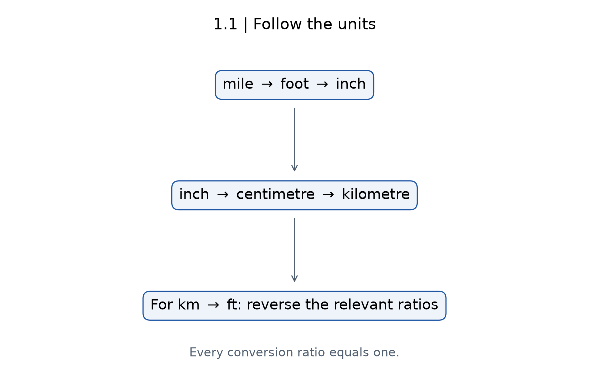
{kind=link}
Drawing for the solution. Vector plots use equal coordinate scales; schematic models are identified in the drawing.
1. Read the drawing and predict. Draw a conversion chain: miles → feet → inches → centimetres → kilometres. A mile is longer than a kilometre, so (a) must exceed 1.
2–3. Choose the relation and rearrange symbolically. Multiply the length by ratios equal to one. Symbolically, $L_{\rm target}=L_{\rm source}\,k$, where $k$ is the product of the conversion ratios.
4. Check before substituting. Zero length stays zero; doubling the starting length must double the result.
5. Calculate step by step, with units.
(a) Miles to kilometres. Start from one mile and convert one unit at a time. The factors 5280, 12 and 2.54 are exact definitions.
$$\begin{aligned} 1\ \mathrm{mi}&=5280\ \mathrm{ft},\\ 5280\ \mathrm{ft}&=5280\times12\ \mathrm{in}\\ &=63360\ \mathrm{in},\\ 63360\ \mathrm{in}&=63360\times2.54\ \mathrm{cm}\\ &=160934.4\ \mathrm{cm},\\ 160934.4\ \mathrm{cm}&=\frac{160934.4}{10^5}\ \mathrm{km}\\ &=1.609344\ \mathrm{km}. \end{aligned}$$
Thus $1.00\ \mathrm{mi}=\boxed{1.61\ \mathrm{km}}$ to three significant figures. We divide by $10^5$ because one kilometre contains $1000\times100=10^5$ centimetres.
(b) Kilometres to feet. First express both units in centimetres:
$$\begin{aligned} 1\ \mathrm{ft}&=12\times2.54\ \mathrm{cm}\\ &=30.48\ \mathrm{cm},\\ 1.00\ \mathrm{km}&=1.00\times10^5\ \mathrm{cm},\\ L&=(1.00\times10^5\ \mathrm{cm})\frac{1\ \mathrm{ft}}{30.48\ \mathrm{cm}}\\ &=3280.839895\ldots\ \mathrm{ft}\\ &\approx\boxed{3.28\times10^3\ \mathrm{ft}}. \end{aligned}$$
The centimetres cancel. Multiplying the unrounded result by $30.48\ \mathrm{cm/ft}$ returns $10^5$ cm.
6. Interpret and check. The conversion definitions are exact; the three figures in 1.00 set the reported precision. Conversion changes the description, not the length.
Y&F Exercise 1.2 — litres to cubic inches
Problem. A bottle contains $0.473\ \mathrm L$. Convert to cubic inches using $1\ \mathrm L=1000\ \mathrm{cm^3}$ and $1\ \mathrm{in}=2.54\ \mathrm{cm}$.
Source: Young & Freedman, University Physics, 15th ed., Chapter 1, Exercise 1.2. Givens retained; question restated and solution written for this course. Try on paper before revealing the route.
Show the worked route / Çözüm yolunu göster
Solution.
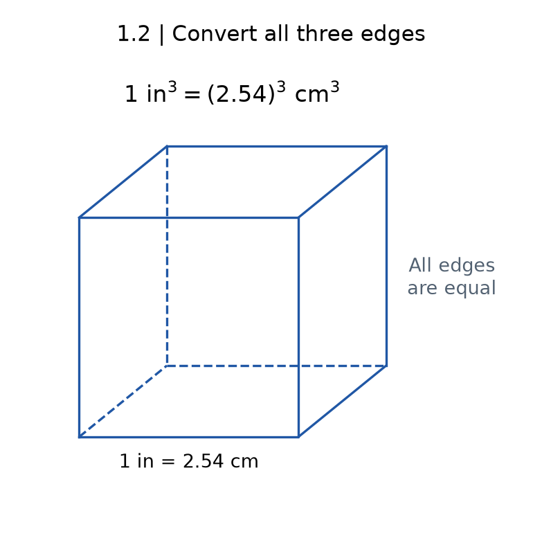
{kind=link}
Drawing for the solution. Vector plots use equal coordinate scales; schematic models are identified in the drawing.
1. Read the drawing and predict. Sketch a cube one inch on each edge: each of its three edges needs conversion. One cubic inch contains more than one cubic centimetre.
2–3. Choose the relation and rearrange symbolically. $V_{\rm in^3}=V_{\rm L}(1000\ \mathrm{cm^3/L})(1\ \mathrm{in}/2.54\ \mathrm{cm})^3$.
4. Check before substituting. If the edge conversion factor doubles, the volume factor changes by eight, not two.
5. Calculate step by step, with units.
Convert the starting volume to cubic centimetres.
$$V=(0.473\ \mathrm L)\frac{1000\ \mathrm{cm^3}}{1\ \mathrm L}=473\ \mathrm{cm^3}.$$
Cube the edge conversion. A cubic inch is a cube, not a one-inch length:
$$\begin{aligned} 1\ \mathrm{in^3}&=(2.54\ \mathrm{cm})^3\\ &=2.54\times2.54\times2.54\ \mathrm{cm^3}\\ &=16.387064\ \mathrm{cm^3}. \end{aligned}$$
Divide by the volume of one cubic inch.
$$\begin{aligned} V&=(473\ \mathrm{cm^3})\frac{1\ \mathrm{in^3}}{16.387064\ \mathrm{cm^3}}\\ &=28.8642309568\ldots\ \mathrm{in^3}\\ &\approx\boxed{28.9\ \mathrm{in^3}}. \end{aligned}$$
Three factors of centimetres cancel, leaving cubic inches. The measured 0.473 L supplies three significant figures; the conversion factors do not limit precision.
6. Interpret and check. About 29 cubic inches corresponds to roughly half a litre. All three centimetre factors cancel.
Y&F Exercise 1.3 — light travel over one foot
Problem. How many nanoseconds does light take to travel $1.00\ \mathrm{ft}$ in vacuum?
Source: Young & Freedman, University Physics, 15th ed., Chapter 1, Exercise 1.3. Givens retained; question restated and solution written for this course. Try on paper before revealing the route.
Show the worked route / Çözüm yolunu göster
Solution.
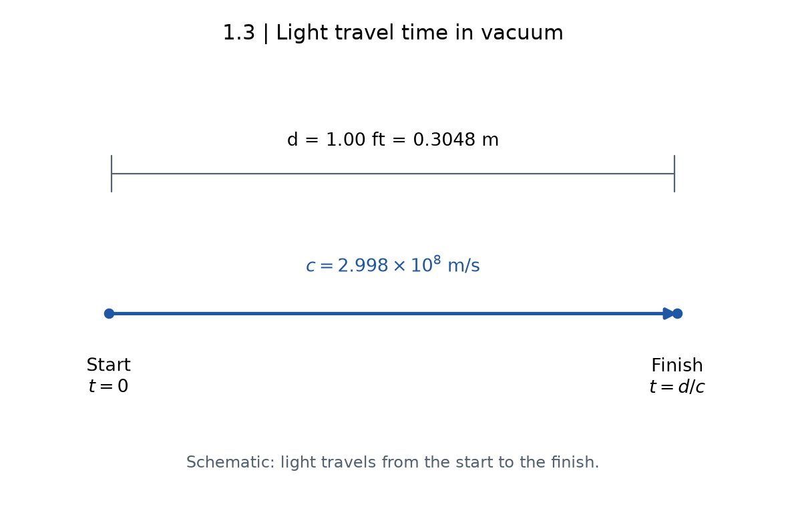
{kind=link}
Drawing for the solution. Vector plots use equal coordinate scales; schematic models are identified in the drawing.
1. Read the drawing and predict. Draw a straight path of length d and mark a clock at each end. The interval is positive and tiny.
2–3. Choose the relation and rearrange symbolically. Uniform propagation gives $d=ct$, hence $t=d/c$. Use exact $c=299792458\ \mathrm{m/s}$ and $1\ \mathrm{ft}=0.3048\ \mathrm m$.
4. Check before substituting. $d\to0$ gives $t\to0$; doubling d doubles t.
5. Calculate step by step, with units.
Convert the path length.
$$d=(1.00\ \mathrm{ft})\frac{0.3048\ \mathrm m}{1\ \mathrm{ft}}=0.3048\ \mathrm m.$$
Use the rearranged equation $t=d/c$.
$$\begin{aligned} t&=\frac{0.3048\ \mathrm m}{299792458\ \mathrm{m/s}}\\ &=1.016703362\ldots\times10^{-9}\ \mathrm s. \end{aligned}$$
The unit calculation is $\mathrm m/(\mathrm{m/s})=\mathrm s$. Since $1\ \mathrm{ns}=10^{-9}\ \mathrm s$,
$$t=(1.016703362\ldots\times10^{-9}\ \mathrm s)\frac{1\ \mathrm{ns}}{10^{-9}\ \mathrm s}\approx\boxed{1.02\ \mathrm{ns}}.$$
As an independent check, $(0.300\ \mathrm{m/ns})(1.02\ \mathrm{ns})\approx0.306\ \mathrm m$, close to one foot.
6. Interpret and check. A foot per nanosecond is a useful approximation, not an exact equality.
Y&F Exercise 1.4 — density conversion
Problem. Convert the density of gold, $19.3\ \mathrm{g/cm^3}$, to $\mathrm{kg/m^3}$.
Source: Young & Freedman, University Physics, 15th ed., Chapter 1, Exercise 1.4. Givens retained; question restated and solution written for this course. Try on paper before revealing the route.
Show the worked route / Çözüm yolunu göster
Solution.
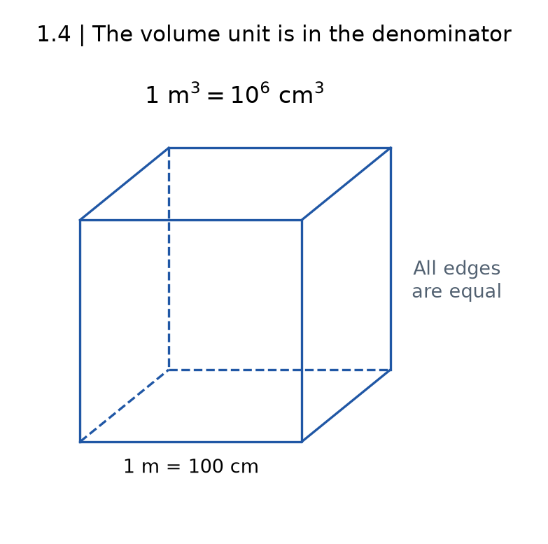
{kind=link}
Drawing for the solution. Vector plots use equal coordinate scales; schematic models are identified in the drawing.
1. Read the drawing and predict. Draw a cube with 100 cm along each edge: one cubic metre contains a million cubic centimetres.
2–3. Choose the relation and rearrange symbolically. $\rho_{\rm SI}=\rho(10^{-3}\ \mathrm{kg/g})(10^2\ \mathrm{cm/m})^3$. The volume unit is in the denominator.
4. Check before substituting. The conversion must preserve mass = density × volume for the same object.
5. Calculate step by step, with units.
Convert mass and volume separately.
$$\begin{aligned} 19.3\ \mathrm g&=0.0193\ \mathrm{kg},\\ 1\ \mathrm{cm^3}&=(10^{-2}\ \mathrm m)^3\\ &=10^{-6}\ \mathrm{m^3}. \end{aligned}$$
Now divide mass by volume.
$$\begin{aligned} \rho&=\frac{0.0193\ \mathrm{kg}}{10^{-6}\ \mathrm{m^3}}\\ &=0.0193\times10^6\ \mathrm{kg/m^3}\\ &=\boxed{1.93\times10^4\ \mathrm{kg/m^3}}. \end{aligned}$$
The denominator becomes a million times smaller numerically, so division introduces $10^6$, not $10^{-6}$. Check a $1\ \mathrm{cm^3}$ sample: $(1.93\times10^4)(10^{-6})\ \mathrm{kg}=0.0193\ \mathrm{kg}=19.3\ \mathrm g$.
6. Interpret and check. The factor is 1000. Converting only grams, or forgetting to cube centimetres, gives the wrong scale.
Y&F Exercise 1.5 — a gigasecond in years
Problem. Convert $1.00\ \mathrm{Gs}$ to years, using the exercise convention of 365 days per year.
Source: Young & Freedman, University Physics, 15th ed., Chapter 1, Exercise 1.5. Givens retained; question restated and solution written for this course. Try on paper before revealing the route.
Show the worked route / Çözüm yolunu göster
Solution.
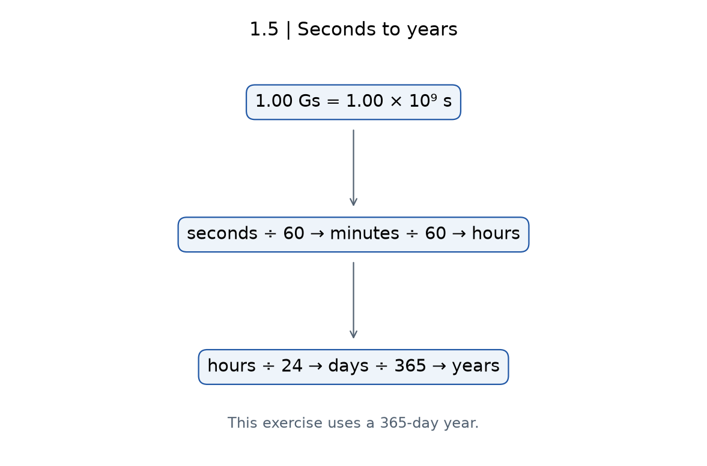
{kind=link}
Drawing for the solution. Vector plots use equal coordinate scales; schematic models are identified in the drawing.
1. Read the drawing and predict. Write G = 10⁹. A year contains tens of millions of seconds, so expect tens of years.
2–3. Choose the relation and rearrange symbolically. $t_{\rm yr}=t_{\rm s}/(365\times24\times60\times60)$, with the denominator in seconds per year.
4. Check before substituting. A duration of one convention-year must convert back to 1 year.
5. Calculate step by step, with units.
Expand the prefix and the chosen year. Giga means $10^9$ exactly.
$$\begin{aligned} t&=1.00\times10^9\ \mathrm s,\\ 1\ \mathrm{yr}&=365\ \mathrm{day},\\ &=365\times24\ \mathrm h=8760\ \mathrm h,\\ &=8760\times60\ \mathrm{min}=525600\ \mathrm{min},\\ &=525600\times60\ \mathrm s=31536000\ \mathrm s. \end{aligned}$$
Convert seconds to years.
$$\begin{aligned} t&=(1.00\times10^9\ \mathrm s)\frac{1\ \mathrm{yr}}{31536000\ \mathrm s}\\ &=31.70979198\ldots\ \mathrm{yr}\\ &\approx\boxed{31.7\ \mathrm{yr}}. \end{aligned}$$
You will be approximately 31.7 years older. The exercise specifies a 365-day year; do not silently substitute a different year convention.
6. Interpret and check. This is a duration conversion. The chosen 365-day year differs from the converter’s explicitly labelled 365.25-day Julian year.
Y&F Exercise 1.11 — one rectangle, two rounding rules
Problem. A rectangle has measured length $L=12\ \mathrm{mm}$ and width $w=5.98\ \mathrm{mm}$. Find its area, $w/L$, perimeter, $L-w$, and $L/w$, with suitable significant figures.
Source: Young & Freedman, University Physics, 15th ed., Chapter 1, Exercise 1.11. Givens retained; question restated and solution written for this course. Try on paper before revealing the route.
Show the worked route / Çözüm yolunu göster
Solution.
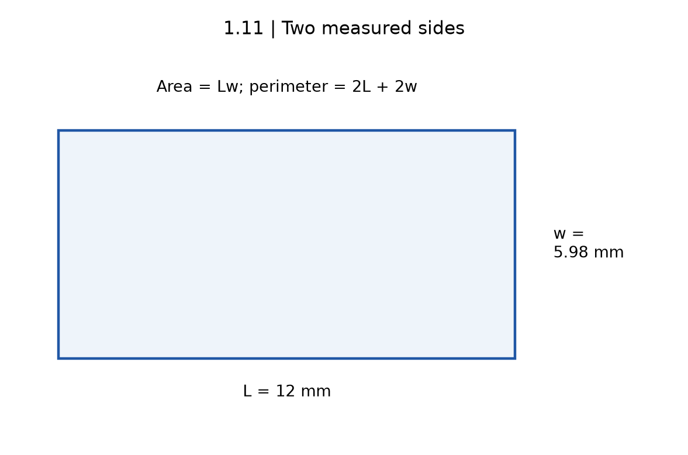
{kind=link}
Drawing for the solution. Vector plots use equal coordinate scales; schematic models are identified in the drawing.
1. Read the drawing and predict. Sketch and label the rectangle. The ruler measurement is less finely resolved than the micrometer measurement.
2–3. Choose the relation and rearrange symbolically. $A=Lw$, $P=2(L+w)$; the two ratios and difference follow directly. The 2 in the perimeter is exact.
4. Check before substituting. $w\to0$ gives $A\to0$, $P\to2L$ and $L-w\to L$.
5. Calculate step by step, with units.
Decide the rounding rule before calculating. $L=12$ mm has two significant figures and its last reported place is 1 mm. $w=5.98$ mm has three significant figures and its last place is 0.01 mm. Products and ratios use the fewest significant figures; sums and differences use the least resolved decimal place.
(a) Area: multiply the measured sides.
$$A=Lw=(12\ \mathrm{mm})(5.98\ \mathrm{mm})=71.76\ \mathrm{mm^2}\approx\boxed{72\ \mathrm{mm^2}}.$$
(b) Width divided by length: units cancel.
$$\frac{w}{L}=\frac{5.98\ \mathrm{mm}}{12\ \mathrm{mm}}=0.498333\ldots\approx\boxed{0.50}.$$
The final zero is needed to show two significant figures.
(c) Perimeter: add the lengths, then apply the exact factor 2. Keep guard digits until the final result.
$$\begin{aligned} L+w&=17.98\ \mathrm{mm},\\ P&=2(L+w)=35.96\ \mathrm{mm}\\ &\approx\boxed{36\ \mathrm{mm}}. \end{aligned}$$
(d) Difference: round to the millimetre place.
$$L-w=12-5.98=6.02\ \mathrm{mm}\approx\boxed{6\ \mathrm{mm}}.$$
Writing 6.0 mm would claim an extra decimal place unsupported by $L$.
(e) Length divided by width.
$$\frac{L}{w}=\frac{12}{5.98}=2.00668896\ldots\approx\boxed{2.0}.$$
The unrounded ratios are reciprocals. These are introductory reporting rules, not a substitute for an explicit uncertainty analysis.
6. Interpret and check. Products and ratios use two significant figures. Sums and differences use the ruler’s millimetre place. Keep unrounded intermediate values; do not round 17.98 before doubling it.
Y&F Exercise 1.12 — a thin wire’s volume
Problem. A cylindrical wire has radius $r=0.036\ \mathrm{cm}$ and height $h=12.1\ \mathrm{cm}$. Find its volume in $\mathrm{mm^3}$ with appropriate significant figures.
Source: Young & Freedman, University Physics, 15th ed., Chapter 1, Exercise 1.12. Givens retained; question restated and solution written for this course. Try on paper before revealing the route.
Show the worked route / Çözüm yolunu göster
Solution.
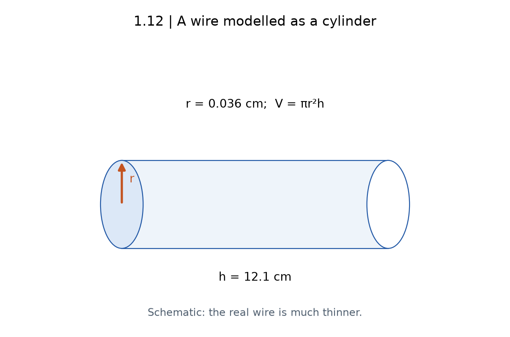
{kind=link}
Drawing for the solution. Vector plots use equal coordinate scales; schematic models are identified in the drawing.
1. Read the drawing and predict. Sketch a long narrow cylinder. Radius appears twice through the circular area; height appears once.
2–3. Choose the relation and rearrange symbolically. $V=\pi r^2h$. Convert $\mathrm{cm^3}$ to $\mathrm{mm^3}$ using $(10\ \mathrm{mm/cm})^3$.
4. Check before substituting. Doubling r quadruples V, while doubling h only doubles V; either dimension going to zero makes V vanish.
5. Calculate step by step, with units.
Square the radius first, including its unit.
$$r^2=(0.036\ \mathrm{cm})^2=0.001296\ \mathrm{cm^2}.$$
Multiply by the height and by $\pi$.
$$\begin{aligned} V&=\pi r^2h\\ &=\pi(0.001296\ \mathrm{cm^2})(12.1\ \mathrm{cm})\\ &=\pi(0.0156816)\ \mathrm{cm^3}\\ &=0.04926519936\ldots\ \mathrm{cm^3}. \end{aligned}$$
Convert all three length factors to millimetres.
$$\begin{aligned} 1\ \mathrm{cm^3}&=(10\ \mathrm{mm})^3=1000\ \mathrm{mm^3},\\ V&=49.26519936\ldots\ \mathrm{mm^3}\\ &\approx\boxed{49\ \mathrm{mm^3}}. \end{aligned}$$
The radius has two significant figures; the height has three, so the final volume has two. Squaring the radius does not create additional significant figures. Converting first gives $r=0.36$ mm and $h=121$ mm, which reproduces the same unrounded volume.
6. Interpret and check. The radius has two significant figures and limits the result. The answer is not 49.3 mm³.
Y&F Exercise 1.13 — error of an approximation
Problem. A year is approximated by $\pi\times10^7\ \mathrm s$. Taking 365.24 days as the reference year, calculate its percent error.
Source: Young & Freedman, University Physics, 15th ed., Chapter 1, Exercise 1.13. Givens retained; question restated and solution written for this course. Try on paper before revealing the route.
Show the worked route / Çözüm yolunu göster
Solution.
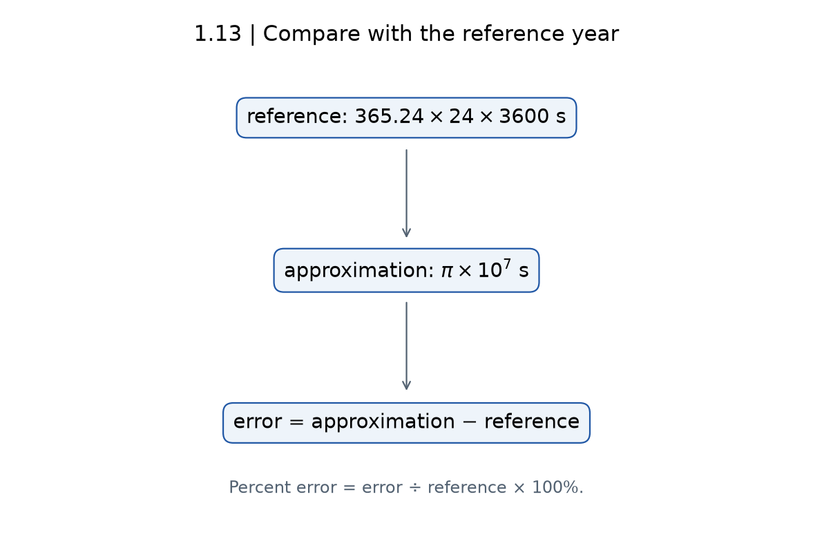
{kind=link}
Drawing for the solution. Vector plots use equal coordinate scales; schematic models are identified in the drawing.
1. Read the drawing and predict. Place approximate and reference durations on a number line. Decide which lies lower before interpreting the sign.
2–3. Choose the relation and rearrange symbolically. $\epsilon=100(t_{\rm approx}-t_{\rm ref})/t_{\rm ref}$; percent-error magnitude is $|\epsilon|$.
4. Check before substituting. If the approximation equals the reference, the error must be zero.
5. Calculate step by step, with units.
Compute the reference number of seconds. Use the 365.24-day year specified here, not the 365-day convention of Exercise 1.5.
$$\begin{aligned} t_{\rm ref}&=(365.24)(24)(60)(60)\ \mathrm s\\ &=31556736\ \mathrm s,\\ t_{\rm approx}&=\pi\times10^7\ \mathrm s\\ &=31415926.5359\ldots\ \mathrm s. \end{aligned}$$
Subtract reference from approximation.
$$\Delta t=t_{\rm approx}-t_{\rm ref}=-140809.4641\ldots\ \mathrm s.$$
Divide by the reference, then multiply by 100%.
$$\begin{aligned} \epsilon&=\frac{t_{\rm approx}-t_{\rm ref}}{t_{\rm ref}}\times100\%\\ &=\frac{-140809.4641\ldots}{31556736}\times100\%\\ &=-0.446210479\ldots\%. \end{aligned}$$
The approximation is 0.446% too small. Its signed percent error is $\boxed{-0.446\%}$; if “percent error” is reported as an absolute size, it is $\boxed{0.446\%}$. The denominator must be the reference, not the approximation.
6. Interpret and check. The approximation is low by 0.446%. This is error relative to a specified reference, not an uncertainty estimate.
Y&F Exercise 1.14 — six digits do not guarantee accuracy
Problem. Write $22/7$ and $355/113$ to six significant figures. Are they accurate to that precision as approximations to $\pi$?
Source: Young & Freedman, University Physics, 15th ed., Chapter 1, Exercise 1.14. Givens retained; question restated and solution written for this course. Try on paper before revealing the route.
Show the worked route / Çözüm yolunu göster
Solution.
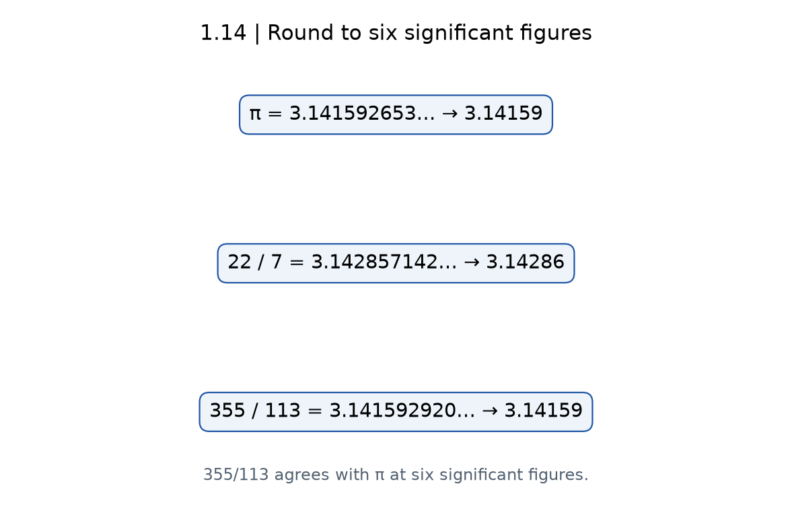
{kind=link}
Drawing for the solution. Vector plots use equal coordinate scales; schematic models are identified in the drawing.
1. Read the drawing and predict. Compare the numerical values to π, not just the number of printed digits.
2–3. Choose the relation and rearrange symbolically. Compute each ratio without rounding first, then round to six significant figures. Compare with $\pi=3.14159265\ldots$.
4. Check before substituting. A perfectly exact representation of π would agree at every reported place; more printed figures alone cannot improve a wrong approximation.
5. Calculate step by step, with units.
Locate six significant figures. For numbers near 3, this means the units digit plus five digits after the decimal point. Inspect the seventh significant digit to decide whether to round up.
(a) First approximation.
$$\frac{22}{7}=3.142857142\ldots\ \longrightarrow\ \boxed{3.14286}.$$
The first six digits give 3.14285; the next digit is 7, so the final 5 rounds to 6.
(b) Second approximation.
$$\frac{355}{113}=3.141592920\ldots\ \longrightarrow\ \boxed{3.14159}.$$
The seventh digit is 2, so the last retained digit does not increase.
(c) Compare with $\pi$, rounded by the same rule.
$$\pi=3.141592653\ldots\ \longrightarrow\ 3.14159.$$
Thus 22/7 is not accurate to six significant figures, while 355/113 is accurate to six significant figures. Their absolute errors are approximately $1.26449\times10^{-3}$ and $2.66764\times10^{-7}$ respectively. Writing six digits is not the same as having six correct digits.
6. Interpret and check. 22/7 is not accurate to six significant figures; 355/113 is. Both fractions are exact numbers, but neither equals π.
Y&F Exercise 1.24 — four quadrants from the same ratio size
Problem. Find counter-clockwise angles from $+x$ for components (in metres): (a) $(2.00,-1.00)$, (b) $(2.00,1.00)$, (c) $(-2.00,1.00)$, (d) $(-2.00,-1.00)$.
Source: Young & Freedman, University Physics, 15th ed., Chapter 1, Exercise 1.24. Givens retained; question restated and solution written for this course. Try on paper before revealing the route.
Show the worked route / Çözüm yolunu göster
Solution.
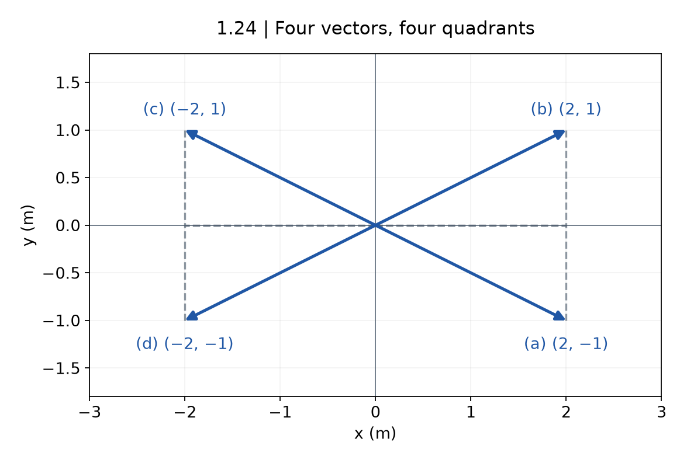
{kind=link}
Drawing for the solution. Vector plots use equal coordinate scales; schematic models are identified in the drawing.
1. Read the drawing and predict. Draw all four arrows. Their quadrants are IV, I, II and III respectively; their magnitudes are equal.
2–3. Choose the relation and rearrange symbolically. First find the reference angle $\alpha=\arctan(|A_y/A_x|)$. Use signs to choose $360^\circ-\alpha$, $\alpha$, $180^\circ-\alpha$ or $180^\circ+\alpha$.
4. Check before substituting. As $|A_y|\to0$, the arrows approach the positive or negative x-axis, depending on $A_x$.
5. Calculate step by step, with units.
Find the acute reference angle once. Every part has $|A_x|=2.00$ m and $|A_y|=1.00$ m:
$$\alpha=\tan^{-1}\left(\frac{|A_y|}{|A_x|}\right)=\tan^{-1}(0.500)=26.565051\ldots^\circ.$$
Use the component signs to place that angle. Directions below are counter-clockwise from $+x$, in $0^\circ\le\theta<360^\circ$.
(a) $A_x>0$, $A_y<0$: quadrant IV, just below $+x$.
$$\theta=360^\circ-\alpha=333.434949\ldots^\circ\approx\boxed{333^\circ}.$$
(b) Both components positive: quadrant I.
$$\theta=\alpha\approx\boxed{26.6^\circ}.$$
(c) $A_x<0$, $A_y>0$: quadrant II, above $-x$.
$$\theta=180^\circ-\alpha=153.434949\ldots^\circ\approx\boxed{153^\circ}.$$
(d) Both components negative: quadrant III, below $-x$.
$$\theta=180^\circ+\alpha=206.565051\ldots^\circ\approx\boxed{207^\circ}.$$
Check using $A=\sqrt{2^2+1^2}=\sqrt5$ m and the unrounded angles in $A_x=A\cos\theta$, $A_y=A\sin\theta$. All four component pairs are recovered. Rounding a large angle to three significant figures can introduce a small back-substitution discrepancy.
6. Interpret and check. The angles above are rounded to three significant figures. The calculator ratio alone cannot distinguish opposite vectors.
Y&F Exercise 1.26 — clockwise from the negative y-axis
Problem. A vector is $34.0^\circ$ clockwise from $-y$ and has $A_x=-16.0\ \mathrm m$. Find $A_y$ and its magnitude.
Source: Young & Freedman, University Physics, 15th ed., Chapter 1, Exercise 1.26. Givens retained; question restated and solution written for this course. Try on paper before revealing the route.
Show the worked route / Çözüm yolunu göster
Solution.
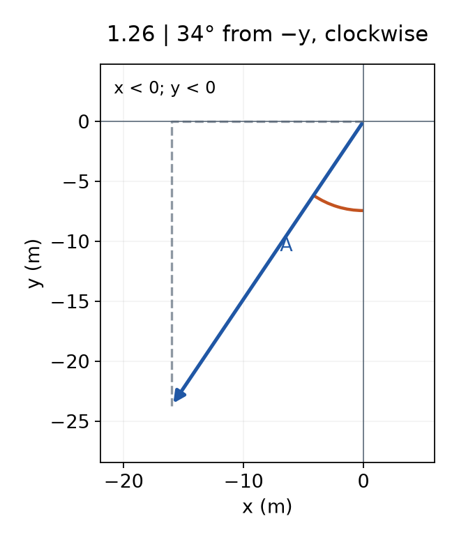
{kind=link}
Drawing for the solution. Vector plots use equal coordinate scales; schematic models are identified in the drawing.
1. Read the drawing and predict. Start at the downward axis and turn clockwise toward the left: quadrant III, so both components must be negative.
2–3. Choose the relation and rearrange symbolically. With $\alpha=34.0^\circ$, $A_x=-A\sin\alpha$ and $A_y=-A\cos\alpha$. Thus $A=-A_x/\sin\alpha$ and $A_y=A_x\cot\alpha$.
4. Check before substituting. At fixed magnitude, α → 0 gives zero x-component and a negative y-component. Holding a nonzero Ax fixed while α → 0 instead requires unbounded magnitude.
5. Calculate step by step, with units.
Read the angle from the correct axis. Starting at $-y$ (270°), clockwise rotation subtracts 34°:
$$\theta=270^\circ-34.0^\circ=236.0^\circ.$$
The vector lies in quadrant III. Relative to the given angle $\alpha$, the horizontal leg is opposite and the vertical leg is adjacent:
$$A_x=-A\sin\alpha,\qquad A_y=-A\cos\alpha.$$
Isolate the magnitude first.
$$\begin{aligned} A&=-\frac{A_x}{\sin\alpha}\\ &=-\frac{-16.0\ \mathrm m}{\sin34.0^\circ}\\ &=28.6126664\ldots\ \mathrm m\\ &\approx\boxed{28.6\ \mathrm m}. \end{aligned}$$
Find the requested y-component using the unrounded magnitude.
$$\begin{aligned} A_y&=-A\cos34.0^\circ\\ &=(-16.0\ \mathrm m)\frac{\cos34.0^\circ}{\sin34.0^\circ}\\ &=-23.7209755\ldots\ \mathrm m\\ &\approx\boxed{-23.7\ \mathrm m}. \end{aligned}$$
Check $\sqrt{A_x^2+A_y^2}=28.6126664\ldots$ m. The magnitude is positive although both components are negative.
6. Interpret and check. Its direction is 236° from +x. The magnitude exceeds the absolute value of either component.
Y&F Exercise 1.27 — counter-clockwise from positive y
Problem. A vector has $A_y=+9.60\ \mathrm m$ and points $32.0^\circ$ counter-clockwise from $+y$. Find $A_x$ and its magnitude.
Source: Young & Freedman, University Physics, 15th ed., Chapter 1, Exercise 1.27. Givens retained; question restated and solution written for this course. Try on paper before revealing the route.
Show the worked route / Çözüm yolunu göster
Solution.
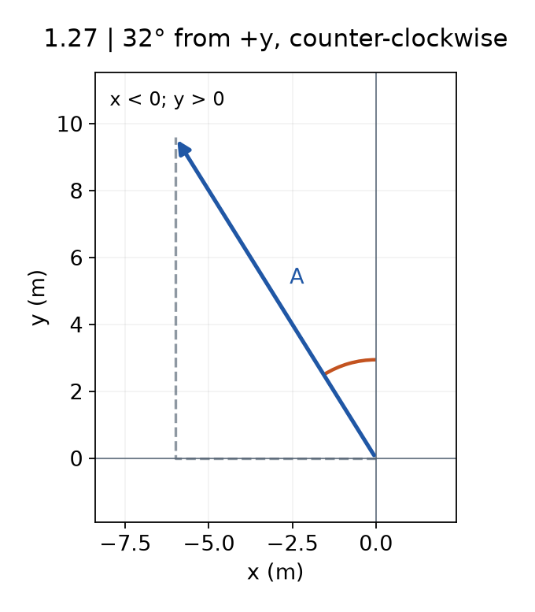
{kind=link}
Drawing for the solution. Vector plots use equal coordinate scales; schematic models are identified in the drawing.
1. Read the drawing and predict. From upward, turn toward the left: quadrant II. Expect Ax negative, Ay positive.
2–3. Choose the relation and rearrange symbolically. $A_y=A\cos\beta$, $A_x=-A\sin\beta$, so $A=A_y/\cos\beta$ and $A_x=-A_y\tan\beta$.
4. Check before substituting. $\beta\to0$ yields $A_x\to0$ and $A\to A_y$.
5. Calculate step by step, with units.
Convert the direction to the usual angle. Counter-clockwise from $+y$ turns toward $-x$:
$$\theta=90^\circ+32.0^\circ=122.0^\circ.$$
Let $\beta=32.0^\circ$. The given y-component is adjacent to $\beta$:
$$A_y=A\cos\beta,\qquad A_x=-A\sin\beta.$$
Find the magnitude.
$$\begin{aligned} A&=\frac{A_y}{\cos\beta}\\ &=\frac{9.60\ \mathrm m}{\cos32.0^\circ}\\ &=11.3201127\ldots\ \mathrm m\\ &\approx\boxed{11.3\ \mathrm m}. \end{aligned}$$
Eliminate $A$ to find the x-component.
$$\begin{aligned} A_x&=-\frac{A_y}{\cos\beta}\sin\beta\\ &=-A_y\tan\beta\\ &=-(9.60\ \mathrm m)\tan32.0^\circ\\ &=-5.99874578\ldots\ \mathrm m\\ &\approx\boxed{-6.00\ \mathrm m}. \end{aligned}$$
The answer is leftward, as the sketch requires. Substituting the components into Pythagoras gives the same magnitude.
6. Interpret and check. The direction is 122° from +x. Using 32° directly in Ax = A cos θ would select the wrong reference axis.
Y&F Exercise 1.30 — magnitude and direction in three quadrants
Problem. Find magnitudes and directions from $+x$: (a) $(-8.60,5.20)\ \mathrm{cm}$, (b) $(-9.70,-2.45)\ \mathrm m$, (c) $(7.75,-2.70)\ \mathrm{km}$.
Source: Young & Freedman, University Physics, 15th ed., Chapter 1, Exercise 1.30. Givens retained; question restated and solution written for this course. Try on paper before revealing the route.
Show the worked route / Çözüm yolunu göster
Solution.
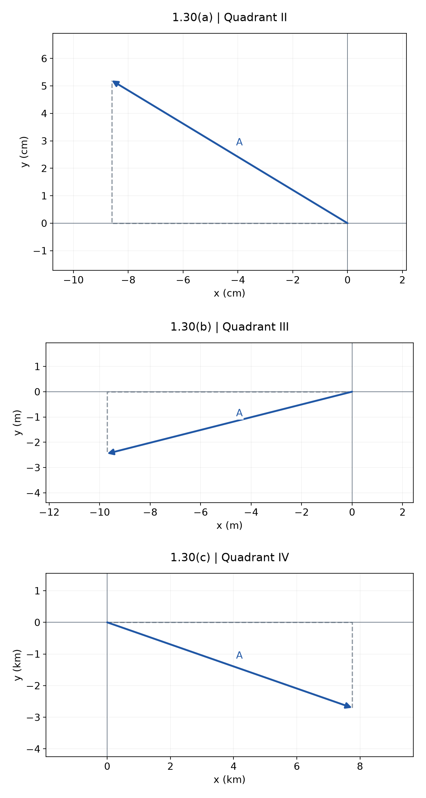
{kind=link}
Drawing for the solution. Vector plots use equal coordinate scales; schematic models are identified in the drawing.
1. Read the drawing and predict. Sketch II, III and IV quadrants respectively. None of the answers can lie in quadrant I.
2–3. Choose the relation and rearrange symbolically. $A=\sqrt{A_x^2+A_y^2}$; determine $\theta$ from the ratio and the signs (equivalently atan2).
4. Check before substituting. Negating both components preserves magnitude and rotates direction by 180°.
5. Calculate step by step, with units.
For every part, compute $A=\sqrt{A_x^2+A_y^2}$ and the acute reference angle $\alpha=\tan^{-1}(|A_y/A_x|)$. Use the quadrant to obtain the actual direction.
(a) $(-8.60,5.20)$ cm: quadrant II.
$$\begin{aligned} A&=\sqrt{(-8.60)^2+(5.20)^2}\ \mathrm{cm}\\ &=\sqrt{73.96+27.04}\ \mathrm{cm}\\ &=10.0498756\ldots\ \mathrm{cm}\\ &\approx\boxed{10.0\ \mathrm{cm}},\\ \alpha&=\tan^{-1}(5.20/8.60)=31.1593\ldots^\circ,\\ \theta&=180^\circ-\alpha\approx\boxed{149^\circ}. \end{aligned}$$
(b) $(-9.70,-2.45)$ m: quadrant III.
$$\begin{aligned} A&=\sqrt{94.09+6.0025}\ \mathrm m\\ &=10.0046239\ldots\ \mathrm m\approx\boxed{10.0\ \mathrm m},\\ \alpha&=\tan^{-1}(2.45/9.70)=14.1751\ldots^\circ,\\ \theta&=180^\circ+\alpha\approx\boxed{194^\circ}. \end{aligned}$$
(c) $(7.75,-2.70)$ km: quadrant IV.
$$\begin{aligned} A&=\sqrt{60.0625+7.29}\ \mathrm{km}\\ &=8.2068569\ldots\ \mathrm{km}\approx\boxed{8.21\ \mathrm{km}},\\ \alpha&=\tan^{-1}(2.70/7.75)=19.2077\ldots^\circ,\\ \theta&=360^\circ-\alpha\approx\boxed{341^\circ}. \end{aligned}$$
All directions are measured counter-clockwise from $+x$. Check the signs of cosine and sine in each stated quadrant; a correct magnitude with the wrong quadrant is not a correct vector.
6. Interpret and check. Parts (a) and (b) round to the same magnitude in different units, but have different directions. Retain the unrounded magnitudes when checking components.
Y&F Exercise 1.31 — the professor’s route
Problem. A driver travels 3.25 km north, 2.20 km west, then 1.50 km south. Find the resultant displacement by components and sketch it.
Source: Young & Freedman, University Physics, 15th ed., Chapter 1, Exercise 1.31. Givens retained; question restated and solution written for this course. Try on paper before revealing the route.
Show the worked route / Çözüm yolunu göster
Solution.
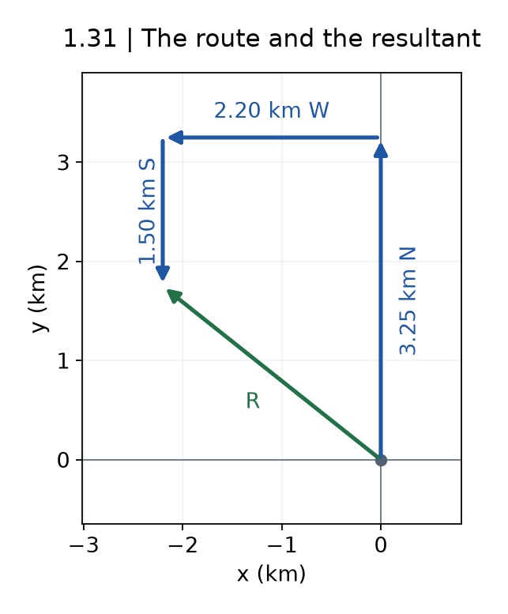
{kind=link}
Drawing for the solution. Vector plots use equal coordinate scales; schematic models are identified in the drawing.
1. Read the drawing and predict. Draw three arrows head to tail. The north and south legs partly cancel; the endpoint is northwest of the start.
2–3. Choose the relation and rearrange symbolically. $R_x=-d_W$, $R_y=d_N-d_S$; $R=\sqrt{R_x^2+R_y^2}$ and $\alpha=\arctan(R_y/|R_x|)$ north of west.
4. Check before substituting. Equal north and south legs would leave a purely westward displacement.
5. Calculate step by step, with units.
Choose east as $+x$ and north as $+y$. Write each leg as an ordered component pair:
$$\begin{aligned} \vec d_1&=(0,3.25)\ \mathrm{km},\\ \vec d_2&=(-2.20,0)\ \mathrm{km},\\ \vec d_3&=(0,-1.50)\ \mathrm{km}. \end{aligned}$$
Add matching components.
$$\begin{aligned} R_x&=0-2.20+0=-2.20\ \mathrm{km},\\ R_y&=3.25+0-1.50=1.75\ \mathrm{km}. \end{aligned}$$
Find the straight-line distance from the start to the finish.
$$\begin{aligned} R&=\sqrt{R_x^2+R_y^2}\\ &=\sqrt{4.84+3.0625}\ \mathrm{km}\\ &=2.81113856\ldots\ \mathrm{km}\approx\boxed{2.81\ \mathrm{km}}. \end{aligned}$$
Find the direction. The endpoint is northwest. Measure the acute angle north of west:
$$\alpha=\tan^{-1}\left(\frac{1.75}{2.20}\right)=38.5006537\ldots^\circ\approx\boxed{38.5^\circ\text{ north of west}}.$$
Equivalently, the unrounded angle from $+x$ is $180^\circ-\alpha=141.499346\ldots^\circ$. The head-to-tail drawing and the calculation both end at $(-2.20,1.75)$ km. The distance driven is $3.25+2.20+1.50=6.95$ km; it is not the displacement magnitude.
6. Interpret and check. Draw the resultant from the start to the final point, not along the route. The 6.95 km path is much longer than 2.81 km displacement.
Y&F Exercise 1.32 — find the missing vector
Problem. $\vec A$ has magnitude 8.00 m at 127° counter-clockwise from +x. The sum $\vec A+\vec B$ is 12.0 m along −y. Find $\vec B$.
Source: Young & Freedman, University Physics, 15th ed., Chapter 1, Exercise 1.32. Givens retained; question restated and solution written for this course. Try on paper before revealing the route.
Show the worked route / Çözüm yolunu göster
Solution.
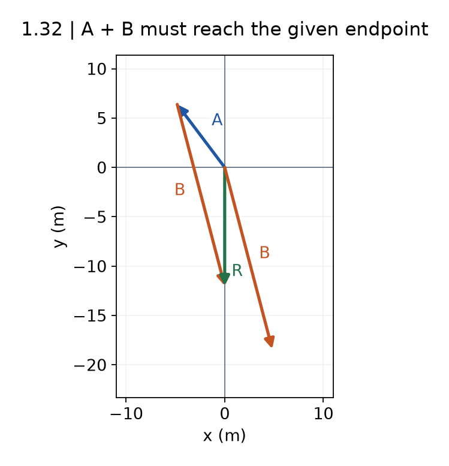
{kind=link}
Drawing for the solution. Vector plots use equal coordinate scales; schematic models are identified in the drawing.
1. Read the drawing and predict. Draw A northwest and the required sum straight down. B must point southeast to cancel A’s westward part and reverse the vertical part.
2–3. Choose the relation and rearrange symbolically. $\vec B=\vec R-\vec A$, with $\vec R=(0,-12.0)\ \mathrm m$. Thus $B_x=-A\cos\theta$, $B_y=-12.0\ \mathrm m-A\sin\theta$.
4. Check before substituting. If $\vec R=\vec A$, then $\vec B=0$; the component subtraction must reproduce that.
5. Calculate step by step, with units.
Resolve the known vector. In degree mode,
$$\begin{aligned} A_x&=(8.00\ \mathrm m)\cos127^\circ=-4.81452019\ldots\ \mathrm m,\\ A_y&=(8.00\ \mathrm m)\sin127^\circ=6.38908408\ldots\ \mathrm m. \end{aligned}$$
Use the required sum. Since $\vec R=\vec A+\vec B=(0,-12.0)$ m,
$$\begin{aligned} B_x&=R_x-A_x=0-(-4.81452019\ldots)\ \mathrm m\\ &=4.81452019\ldots\ \mathrm m,\\ B_y&=R_y-A_y=(-12.0-6.38908408\ldots)\ \mathrm m\\ &=-18.38908408\ldots\ \mathrm m. \end{aligned}$$
Compute magnitude and direction from these components.
$$\begin{aligned} B&=\sqrt{B_x^2+B_y^2}=19.0088931274\ldots\ \mathrm m\\ &\approx\boxed{19.0\ \mathrm m},\\ \alpha&=\tan^{-1}\left(\frac{|B_y|}{B_x}\right)=75.3285\ldots^\circ,\\ \theta_B&=360^\circ-\alpha=284.6715\ldots^\circ\\ &\approx\boxed{285^\circ\text{ from }+x}. \end{aligned}$$
Alternatively describe the direction as $75.3^\circ$ south of east. Add the unrounded components back to A: x cancels exactly and y becomes −12.0 m. In the drawing, the translated B arrow connects the head of A to the required endpoint.
Source cross-check. The instructor’s manual has a transposed intermediate value: $8\cos127^\circ=-4.81452\ldots$, not $-4.185$. The components above use the trigonometric calculation; the manual’s final magnitude and direction agree.
6. Interpret and check. Check with the unrounded components: A+B = (0,−12.0) m. Giving only the magnitude would not specify the required vector.
Y&F Exercise 1.33 — sum and differences from a diagram
Problem. $\vec A$ is 2.80 cm at +60.0° and $\vec B$ is 1.90 cm at −60.0°, both from +x (Fig. E1.33). Find magnitudes and directions of A+B, A−B and B−A.
Source: Young & Freedman, University Physics, 15th ed., Chapter 1, Exercise 1.33. Givens retained; question restated and solution written for this course. Try on paper before revealing the route.
Show the worked route / Çözüm yolunu göster
Solution.
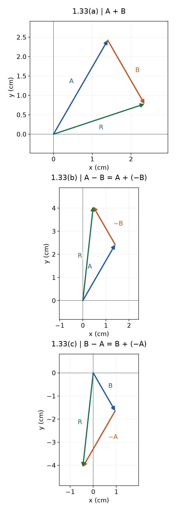
{kind=link}
Drawing for the solution. Vector plots use equal coordinate scales; schematic models are identified in the drawing.
1. Read the drawing and predict. Draw A up-right and B down-right. Their sum points mostly right; subtracting B instead reinforces the upward components.
2–3. Choose the relation and rearrange symbolically. Compute each component using sine and cosine, then add or subtract components before taking magnitudes.
4. Check before substituting. If A and B were identical, their difference would vanish. Swapping the order of subtraction must reverse direction only.
5. Calculate step by step, with units.
Resolve the two given arrows. Both x-components are positive; only B has a negative y-component.
$$\begin{aligned} A_x&=2.80\cos60.0^\circ=1.400\ \mathrm{cm},\\ A_y&=2.80\sin60.0^\circ=2.42487113\ldots\ \mathrm{cm},\\ B_x&=1.90\cos(-60.0^\circ)=0.950\ \mathrm{cm},\\ B_y&=1.90\sin(-60.0^\circ)=-1.64544827\ldots\ \mathrm{cm}. \end{aligned}$$
(a) Add A and B.
$$\begin{aligned} S_x&=A_x+B_x=2.350\ \mathrm{cm},\\ S_y&=A_y+B_y=0.77942286\ldots\ \mathrm{cm},\\ S&=\sqrt{S_x^2+S_y^2}=\sqrt{6.13}\ \mathrm{cm}\\ &\approx\boxed{2.48\ \mathrm{cm}},\\ \theta_S&=\tan^{-1}(S_y/S_x)\approx\boxed{18.3^\circ}. \end{aligned}$$
Both components are positive, so no quadrant correction is needed.
(b) Subtract B by adding −B. Its y-component changes sign before addition:
$$\begin{aligned} D_x&=A_x-B_x=0.450\ \mathrm{cm},\\ D_y&=A_y-B_y=4.07031940\ldots\ \mathrm{cm},\\ D&=\sqrt{D_x^2+D_y^2}=\sqrt{16.77}\ \mathrm{cm}\\ &\approx\boxed{4.10\ \mathrm{cm}},\\ \theta_D&=\tan^{-1}(D_y/D_x)\approx\boxed{83.7^\circ}. \end{aligned}$$
(c) Reverse the subtraction order. $\vec E=\vec B-\vec A=-\vec D$:
$$\begin{aligned} \vec E&=(-0.450,-4.07031940\ldots)\ \mathrm{cm},\\ E&=D\approx\boxed{4.10\ \mathrm{cm}},\\ \theta_E&=180^\circ+83.6912\ldots^\circ\\ &\approx\boxed{264^\circ}. \end{aligned}$$
All directions are counter-clockwise from $+x$. Each panel draws the second vector from the head of the first. The green resultant always starts at the original origin, so the drawing implements the same addition as the arithmetic.
6. Interpret and check. Draw each result from its component pair. The two differences are opposite arrows of equal length; their unrounded directions differ by exactly 180°.
Y&F Exercise 1.36 — subtract unit-vector expressions
Problem. $\vec A=4.00\hat\imath+7.00\hat\jmath$ and $\vec B=5.00\hat\imath-2.00\hat\jmath$. Find both magnitudes, A−B, and its magnitude and direction. Sketch all three.
Source: Young & Freedman, University Physics, 15th ed., Chapter 1, Exercise 1.36. Givens retained; question restated and solution written for this course. Try on paper before revealing the route.
Show the worked route / Çözüm yolunu göster
Solution.
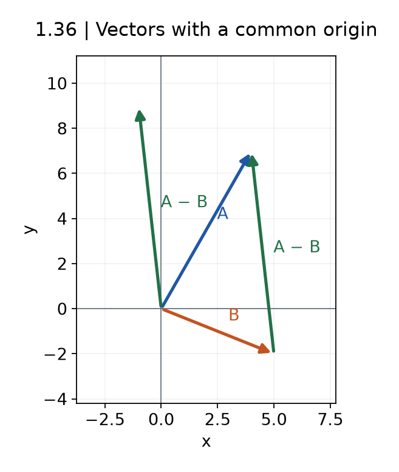
{kind=link}
Drawing for the solution. Vector plots use equal coordinate scales; schematic models are identified in the drawing.
1. Read the drawing and predict. A points northeast and B southeast. With tails together, the arrow from B’s head to A’s head represents A−B.
2–3. Choose the relation and rearrange symbolically. $A=\sqrt{A_x^2+A_y^2}$, $B=\sqrt{B_x^2+B_y^2}$; subtract matching components. These abstract vectors have no specified physical units.
4. Check before substituting. A−A would be zero; subtracting a negative y-component adds to the positive y-component.
5. Calculate step by step, with units.
(a) Read the components and take magnitudes. Unit vectors identify the components directly:
$$\begin{aligned} \vec A&=(4.00,7.00),\qquad\vec B=(5.00,-2.00),\\ A&=\sqrt{4.00^2+7.00^2}=\sqrt{65}\approx\boxed{8.06},\\ B&=\sqrt{5.00^2+(-2.00)^2}=\sqrt{29}\approx\boxed{5.39}. \end{aligned}$$
(b) Subtract component by component.
$$\begin{aligned} D_x&=4.00-5.00=-1.00,\\ D_y&=7.00-(-2.00)=9.00,\\ \vec D&=\vec A-\vec B=\boxed{-1.00\hat\imath+9.00\hat\jmath}. \end{aligned}$$
(c) Find the difference’s magnitude and direction.
$$\begin{aligned} D&=\sqrt{(-1.00)^2+9.00^2}=\sqrt{82}\approx\boxed{9.06},\\ \alpha&=\tan^{-1}(9.00/1.00)=83.6598\ldots^\circ,\\ \theta_D&=180^\circ-\alpha\approx\boxed{96.3^\circ}. \end{aligned}$$
The angle is counter-clockwise from $+x$; the signs put D in quadrant II.
(d) Compare with the drawing. Draw A and B with their tails together. The arrow from B’s head to A’s head moves 1 unit left and 9 units up, so it is D. Translating that arrow to the origin leaves it unchanged. Check $\vec B+\vec D=\vec A$. These abstract vectors have no physical unit specified in the question.
6. Interpret and check. The difference points almost upward, slightly left, consistent with the sketch drawn with both tails together.
Y&F Exercise 1.39 — three-dimensional subtraction
Problem. $\vec A=-2.00\hat\imath+3.00\hat\jmath+4.00\hat k$ and $\vec B=3.00\hat\imath+1.00\hat\jmath-3.00\hat k$. Find both magnitudes, A−B and its magnitude; compare with |B−A|.
Source: Young & Freedman, University Physics, 15th ed., Chapter 1, Exercise 1.39. Givens retained; question restated and solution written for this course. Try on paper before revealing the route.
Show the worked route / Çözüm yolunu göster
Solution.
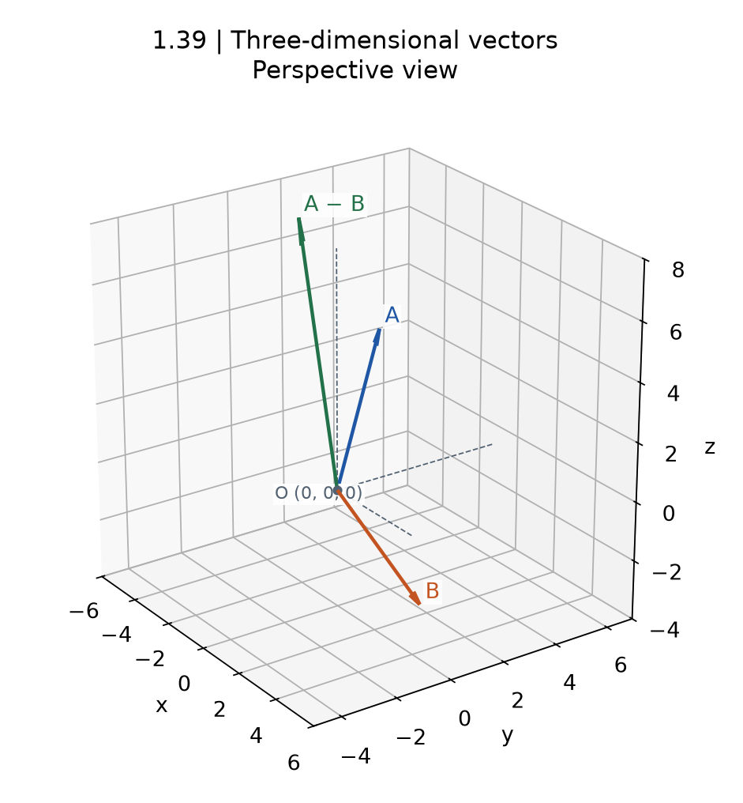
{kind=link}
Drawing for the solution. Vector plots use equal coordinate scales; schematic models are identified in the drawing.
1. Read the drawing and predict. Draw three perpendicular axes. The difference changes x negatively and z positively; magnitude is never the difference of the two magnitudes in general.
2–3. Choose the relation and rearrange symbolically. $|\vec A|=\sqrt{A_x^2+A_y^2+A_z^2}$ and similarly for B; $\vec D=(A_x-B_x,A_y-B_y,A_z-B_z)$.
4. Check before substituting. Reversing a vector changes all component signs but none of their squares.
5. Calculate step by step, with units.
(a) Square and add all three components.
$$\begin{aligned} A&=\sqrt{(-2.00)^2+3.00^2+4.00^2}\\ &=\sqrt{4+9+16}=\sqrt{29}\approx\boxed{5.39},\\ B&=\sqrt{3.00^2+1.00^2+(-3.00)^2}\\ &=\sqrt{9+1+9}=\sqrt{19}\approx\boxed{4.36}. \end{aligned}$$
(b) Subtract matching components.
$$\begin{aligned} D_x&=-2.00-3.00=-5.00,\\ D_y&=3.00-1.00=2.00,\\ D_z&=4.00-(-3.00)=7.00,\\ \vec D&=\boxed{-5.00\hat\imath+2.00\hat\jmath+7.00\hat k}. \end{aligned}$$
(c) Take the magnitude of the difference.
$$\begin{aligned} D&=\sqrt{(-5.00)^2+2.00^2+7.00^2}\\ &=\sqrt{25+4+49}=\sqrt{78}\approx\boxed{8.83}. \end{aligned}$$
Compare with the reverse difference. $\vec B-\vec A=(5.00,-2.00,-7.00)=-\vec D$. Squaring those components gives the same $25+4+49$, so $\boxed{|\vec B-\vec A|=|\vec A-\vec B|}$. The 3D drawing is a perspective view; use the coordinates, not apparent screen angles, to judge orthogonality. No physical units are specified.
6. Interpret and check. The reverse difference has the opposite direction and the same magnitude. The abstract input vectors carry no stated physical units.
Y&F Exercise 1.40 — dot product and angle
Problem. Using $\vec A=(4.00,7.00)$ and $\vec B=(5.00,-2.00)$ from Exercise 1.36, find A·B and the angle between them.
Source: Young & Freedman, University Physics, 15th ed., Chapter 1, Exercise 1.40. Givens retained; question restated and solution written for this course. Try on paper before revealing the route.
Show the worked route / Çözüm yolunu göster
Solution.
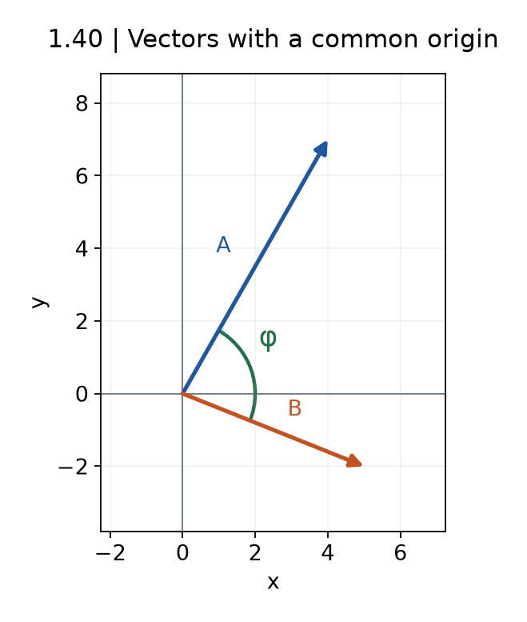
{kind=link}
Drawing for the solution. Vector plots use equal coordinate scales; schematic models are identified in the drawing.
1. Read the drawing and predict. The x projections reinforce in the dot product while the y projections oppose; expect a small positive sum.
2–3. Choose the relation and rearrange symbolically. $\vec A\cdot\vec B=A_xB_x+A_yB_y$, then $\phi=\arccos[(\vec A\cdot\vec B)/(AB)]$ for nonzero vectors.
4. Check before substituting. If the dot product were zero the vectors would be perpendicular. A small positive ratio means just under 90°.
5. Calculate step by step, with units.
(a) Multiply corresponding components, then add.
$$\begin{aligned} \vec A\cdot\vec B&=A_xB_x+A_yB_y\\ &=(4.00)(5.00)+(7.00)(-2.00)\\ &=20.0-14.0=\boxed{6.00}. \end{aligned}$$
The positive x contribution slightly exceeds the negative y contribution.
(b) Rearrange the geometric definition for the angle. Both vectors are nonzero, so divide by $AB$:
$$\begin{aligned} \vec A\cdot\vec B&=AB\cos\phi,\\ \cos\phi&=\frac{\vec A\cdot\vec B}{AB},\\ \phi&=\cos^{-1}\left(\frac{\vec A\cdot\vec B}{AB}\right). \end{aligned}$$
Use $A=\sqrt{65}$ and $B=\sqrt{29}$ from Exercise 1.36, retaining full precision:
$$\begin{aligned} \cos\phi&=\frac{6}{\sqrt{65}\sqrt{29}}=0.138196\ldots,\\ \phi&=82.0565\ldots^\circ\approx\boxed{82.1^\circ}. \end{aligned}$$
The positive dot product requires an acute angle, as drawn. Calculating the separate directions gives 60.2551° for A and −21.8014° for B; their separation independently gives 82.0565°.
6. Interpret and check. The angle is acute as predicted. Use the magnitudes of the individual vectors, not the magnitude of their sum, in the denominator.
Y&F Exercise 1.42 — cross product from the same pair
Problem. Using $\vec A=(4.00,7.00,0)$ and $\vec B=(5.00,-2.00,0)$ from Exercise 1.36, find A×B in unit-vector form and its magnitude.
Source: Young & Freedman, University Physics, 15th ed., Chapter 1, Exercise 1.42. Givens retained; question restated and solution written for this course. Try on paper before revealing the route.
Show the worked route / Çözüm yolunu göster
Solution.
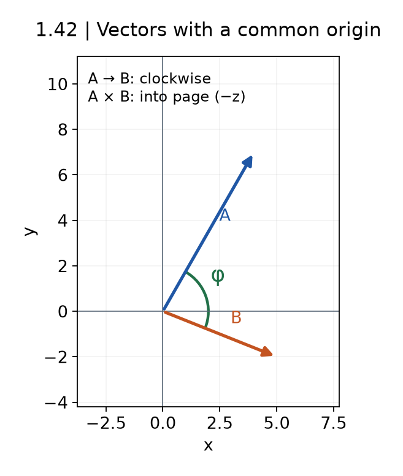
{kind=link}
Drawing for the solution. Vector plots use equal coordinate scales; schematic models are identified in the drawing.
1. Read the drawing and predict. Looking from +z, turning from A toward B through the smaller angle is clockwise, so predict −z.
2–3. Choose the relation and rearrange symbolically. Only $C_z=A_xB_y-A_yB_x$ survives because both input z-components are zero.
4. Check before substituting. Parallel inputs would make the two products equal and their difference zero; reversing order reverses the sign.
5. Calculate step by step, with units.
Include the zero z-components. $\vec A=(4.00,7.00,0)$ and $\vec B=(5.00,-2.00,0)$.
Expand all three components in the order A × B.
$$\begin{aligned} C_x&=A_yB_z-A_zB_y\\ &=(7.00)(0)-(0)(-2.00)=0,\\ C_y&=A_zB_x-A_xB_z\\ &=(0)(5.00)-(4.00)(0)=0,\\ C_z&=A_xB_y-A_yB_x\\ &=(4.00)(-2.00)-(7.00)(5.00)\\ &=-8.00-35.0=-43.0. \end{aligned}$$
Assemble the vector and take its magnitude.
$$\vec A\times\vec B=\boxed{-43.0\hat k},$$ $$|\vec A\times\vec B|=\sqrt{0^2+0^2+(-43.0)^2}=\boxed{43.0}.$$
Use the drawing for an independent direction check. Viewed from $+z$, turning from A toward B through the smaller angle is clockwise. The right-hand rule therefore gives $-z$, into the page. The magnitude is nonnegative; it is the z-component that is negative. Finally, $AB\sin\phi=\sqrt{65}\sqrt{29}\sin(82.0565\ldots^\circ)=43$, agreeing with the component calculation.
6. Interpret and check. The magnitude is positive, the z-component negative. An independent identity checks Exercises 1.40 and 1.42: $6^2+43^2=(65)(29)=1885$.
Y&F Exercise 1.43 — three angles from scalar products
Problem. Find the angle for each pair: (a) A=(−2.00,6.00), B=(2.00,−3.00); (b) A=(3.00,5.00), B=(10.00,6.00); (c) A=(−4.00,2.00), B=(7.00,14.00).
Source: Young & Freedman, University Physics, 15th ed., Chapter 1, Exercise 1.43. Givens retained; question restated and solution written for this course. Try on paper before revealing the route.
Show the worked route / Çözüm yolunu göster
Solution.
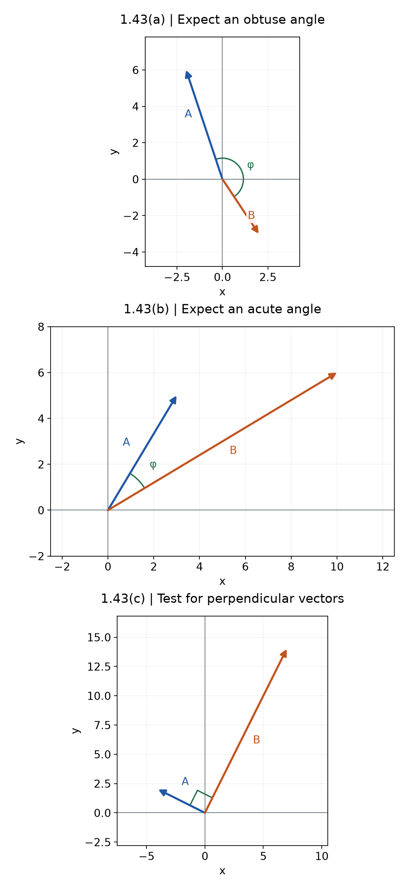
{kind=link}
Drawing for the solution. Vector plots use equal coordinate scales; schematic models are identified in the drawing.
1. Read the drawing and predict. Sketch each pair tail to tail. Pair (a) is almost opposite; (b) points broadly together; (c) may be perpendicular.
2–3. Choose the relation and rearrange symbolically. For every pair, $\cos\phi=(A_xB_x+A_yB_y)/(AB)$, with $0\le\phi\le180^\circ$.
4. Check before substituting. A negative numerator implies obtuse; zero implies 90° for nonzero inputs; positive implies acute.
5. Calculate step by step, with units.
For each pair, use $\phi=\cos^{-1}[(\vec A\cdot\vec B)/(AB)]$. The inverse cosine gives the smaller angle between the vectors, from 0° to 180°.
(a) A = (−2.00, 6.00), B = (2.00, −3.00).
$$\begin{aligned} \vec A\cdot\vec B&=(-2)(2)+(6)(-3)=-22,\\ A&=\sqrt{(-2)^2+6^2}=\sqrt{40},\\ B&=\sqrt{2^2+(-3)^2}=\sqrt{13},\\ \cos\phi&=\frac{-22}{\sqrt{40}\sqrt{13}}=-0.9647638\ldots,\\ \phi&=164.744881\ldots^\circ\approx\boxed{165^\circ}. \end{aligned}$$
The negative dot product means obtuse; the first drawing shows almost opposite arrows.
(b) A = (3.00, 5.00), B = (10.00, 6.00).
$$\begin{aligned} \vec A\cdot\vec B&=(3)(10)+(5)(6)=60,\\ A&=\sqrt{3^2+5^2}=\sqrt{34},\\ B&=\sqrt{10^2+6^2}=\sqrt{136},\\ \cos\phi&=\frac{60}{\sqrt{34}\sqrt{136}}=\frac{60}{68},\\ \phi&=28.072487\ldots^\circ\approx\boxed{28.1^\circ}. \end{aligned}$$
The positive dot product means acute, consistent with the second drawing.
(c) A = (−4.00, 2.00), B = (7.00, 14.00).
$$\begin{aligned} \vec A\cdot\vec B&=(-4)(7)+(2)(14)=-28+28=0,\\ A&=\sqrt{20},\qquad B=\sqrt{245},\\ \cos\phi&=\frac{0}{\sqrt{20}\sqrt{245}}=0,\\ \phi&=\boxed{90.0^\circ}. \end{aligned}$$
Both magnitudes are nonzero, so the zero dot product establishes perpendicularity. A supplementary check is that the slopes are −1/2 and 2: their product is −1.
6. Interpret and check. The inverse cosine returns the angle between vectors directly. Unlike arctan of a component ratio, there is no 180° quadrant correction here.
Y&F Exercise 1.44 — reverse the cross-product order
Problem. For Fig. E1.33, A is 2.80 cm at +60.0° and B is 1.90 cm at −60.0°. Find the magnitudes and directions of A×B and B×A.
Source: Young & Freedman, University Physics, 15th ed., Chapter 1, Exercise 1.44. Givens retained; question restated and solution written for this course. Try on paper before revealing the route.
Show the worked route / Çözüm yolunu göster
Solution.
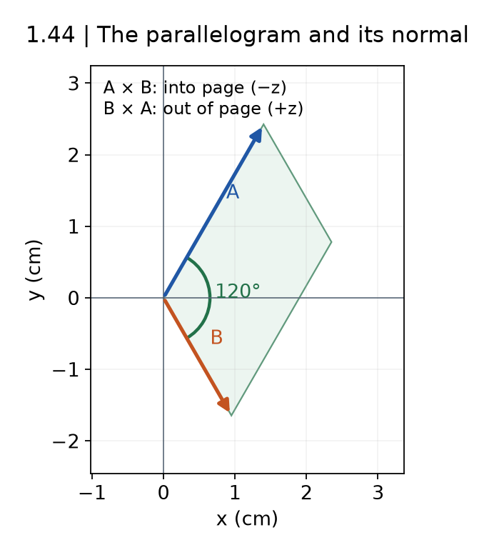
{kind=link}
Drawing for the solution. Vector plots use equal coordinate scales; schematic models are identified in the drawing.
1. Read the drawing and predict. The smaller angle is 120°, not 60°. A → B is clockwise viewed from +z; B → A is counter-clockwise.
2–3. Choose the relation and rearrange symbolically. $|\vec A\times\vec B|=AB\sin120^\circ$; use the right-hand rule for the vector sign.
4. Check before substituting. Changing the order preserves the spanned parallelogram area and reverses its normal.
5. Calculate step by step, with units.
Find the angle between the vectors, not either angle to an axis. A is at +60.0° and B at −60.0°, so the smaller separation is
$$\phi=60.0^\circ-(-60.0^\circ)=120.0^\circ.$$
(a) Magnitude of A × B.
$$\begin{aligned} |\vec A\times\vec B|&=AB\sin\phi\\ &=(2.80\ \mathrm{cm})(1.90\ \mathrm{cm})\sin120.0^\circ\\ &=(5.32)(0.8660254\ldots)\ \mathrm{cm^2}\\ &=4.60725515\ldots\ \mathrm{cm^2}\\ &\approx\boxed{4.61\ \mathrm{cm^2}}. \end{aligned}$$
Determine the direction separately. Curl from A toward B through the smaller angle: this is clockwise when viewed from $+z$. Hence
$$\boxed{\vec A\times\vec B=-4.61\hat k\ \mathrm{cm^2}}\quad\text{(into the page)}.$$
(b) Reverse the order. The parallelogram area remains the same, but the direction reverses:
$$\boxed{\vec B\times\vec A=+4.61\hat k\ \mathrm{cm^2}}\quad\text{(out of the page)}.$$
Both magnitudes are 4.61 cm². Check the first sign using the components from Exercise 1.33:
$$\begin{aligned} C_z&=A_xB_y-A_yB_x\\ &=(1.400)(-1.64544827\ldots)\\ &\quad-(2.42487113\ldots)(0.950)\\ &=-4.60725515\ldots\ \mathrm{cm^2}. \end{aligned}$$
The component check confirms both the sign and the area interpretation.
6. Interpret and check. The first points into the page, the second out. The units multiply: cm × cm = cm².
Y&F Exercise 1.47 — recover a vector from its cross product
Problem. $\vec A$ is 8.0 m along −x. The product A×B is $+16.0\hat k\ \mathrm{m^2}$ and B has no x-component. Find B.
Source: Young & Freedman, University Physics, 15th ed., Chapter 1, Exercise 1.47. Givens retained; question restated and solution written for this course. Try on paper before revealing the route.
Show the worked route / Çözüm yolunu göster
Solution.
Draw and predict. A points left. For the right-hand rule to give +z, B must point downward in the xy-plane. First verify that no z-component can hide in the data.
Choose and rearrange. Write $\vec A=(-a,0,0)$ and $\vec B=(0,B_y,B_z)$. Then $\vec A\times\vec B=(0,aB_z,-aB_y)$.
Check before substituting. A zero y-component of the product forces Bz=0 because a is nonzero. A positive product z-component requires By negative.
Calculate with units.
$$8.0 B_z=0\Rightarrow B_z=0,$$ $$\begin{aligned} -(8.0\ \mathrm m)B_y&=16.0\ \mathrm{m^2}\Rightarrow B_y \\ &=-2.0\ \mathrm m, \end{aligned}$$ $$\vec B=-2.0\hat\jmath\ \mathrm m.$$
Interpret. Magnitude 2.0 m, direction −y, with two significant figures from 8.0 m. Specifying Bx=0 removes a component that a cross product with A could not otherwise determine.
Y&F Exercise 1.48 — equal magnitudes of two different products
Problem. Two nonzero vectors make angle θ. (a) At 30.0°, which product has larger magnitude, the dot or cross product? (b) At which angles between 0° and 180° are their magnitudes equal?
Source: Young & Freedman, University Physics, 15th ed., Chapter 1, Exercise 1.48. Givens retained; question restated and solution written for this course. Try on paper before revealing the route.
Show the worked route / Çözüm yolunu göster
Solution.
Draw and predict. Sketch cosine and sine. Dot-product magnitude uses absolute cosine; overlooking the absolute value loses an answer in quadrant II.
Choose and rearrange. $|\vec A\cdot\vec B|=AB|\cos\theta|$, $|\vec A\times\vec B|=AB\sin\theta$. Cancel the nonzero AB to compare.
Check before substituting. At 0° the dot magnitude is AB and cross is zero; at 90° the reverse holds; at 180° dot magnitude returns to AB.
Calculate with units.
$$\theta=30^\circ:\quad|\cos\theta|=\sqrt3/2>1/2=\sin\theta,$$ $$\begin{aligned} |\cos\theta|&=\sin\theta\Rightarrow\cos^2\theta \\ &=\sin^2\theta, \end{aligned}$$ $$\theta=45^\circ\quad\text{or}\quad135^\circ.$$
Interpret. The dot magnitude is larger at 30°. At 135° the dot product is negative, but its magnitude equals the cross-product magnitude. If either input vector is zero, both products vanish and an angle need not be defined.
1.PProblem set
The problem set for this week — core (L1), intermediate (L2) and challenge (L3) — is in the notebook, not on this page. Each problem shows its answer so you can check yourself; the full worked solution opens on the date printed under it.
Write your own attempt first: symbolic answer, one limiting-case check, then numbers. Opening the answer first turns a problem into a worked example, and worked examples do not build the skill the exam tests.
exit check and key equations
1.4Exit checkÇıkış kontrolü
Answer the chapter-opening question again, now with a calculation. A thunderstorm moves at $15\ \mathrm{km/h}$ in a direction $37^\circ$ north of east. How far north does it move in $2.0\ \mathrm h$? Then write one sentence naming the physical principle and one line of algebra you can now explain, and mark the first step you are unsure of. TR: Açılış sorusunu şimdi hesapla; sonra kullandığın ilkeyi bir cümleyle yaz ve emin olmadığın ilk adımı işaretle.
Model responses / Örnek yanıtlar — open after trying
The opening question: (iii) 18 km. Take $+x$ east and $+y$ north. The velocity has magnitude $v=15\ \mathrm{km/h}$ at $\theta=37^\circ$ from $+x$, so by equations (1.5) its northward component is $v_y=v\sin\theta=(15\ \mathrm{km/h})(\sin37^\circ)=9.0\ \mathrm{km/h}$. In 2.0 h the storm therefore moves $(9.0\ \mathrm{km/h})(2.0\ \mathrm h)=18\ \mathrm{km}$ north. The tempting wrong answer is 30 km — that is the total distance travelled, $(15)(2.0)$, not its northward part. Only the component along a direction counts for displacement along that direction, which is §1.8 in one line.
Entry: "A distance of 5 m" identifies a quantity, a number and a unit; "5" alone identifies nothing (§1.3).
Exit: For magnitude $A$ at angle $\theta$ from $+x$, $A_x=A\cos\theta$ and $A_y=A\sin\theta$, and $A=\sqrt{A_x^2+A_y^2}$. Walking 3 m out and 3 m back gives a path length of 6 m and a displacement of zero: displacement compares endpoints (§1.7).
Visual prediction: at $\theta=130^\circ$ with $A=5.00\ \mathrm m$, $A_x=-3.21\ \mathrm m$ and $A_y=+3.83\ \mathrm m$; the signs place it in quadrant II, and $A_x^2+A_y^2=25.0\ \mathrm{m^2}$ before rounding, so the magnitude is unchanged by rotation. In the products demonstration, the scalar product is $+AB$ at $0^\circ$, zero at $90^\circ$ and $-AB$ at $180^\circ$, while the magnitude of the vector product does the opposite — zero, $AB$, zero.
And the trap of the week: a calculator's $\arctan(A_y/A_x)$ cannot distinguish $\theta$ from $\theta+180^\circ$. Example 1.7 and VP1.7.3 both produced an angle that was wrong by exactly that amount, and in both cases only the sketch caught it.
1.5Solutions and next weekÇözümler ve gelecek hafta
Complete worked solutions (all subparts, with optional Python) are released on the course page: Module 01 (Units and vectors): Week_01_Python_Solutions.ipynb, opens 29 September 2026. Until then, use the Answer blocks above to check yourself.
Next week: Week 02 — Motion in one dimension / Bir boyutta hareket (28 September 2026 – 2 October 2026), Young & Freedman Chapter 2. The vectors of §1.7–1.8 become displacement, velocity and acceleration along a line, where a component's sign carries the whole of the direction.
∑Key equations of this week
Every equation the notebook boxed, in the order it appeared. If you can say what each symbol is and when the equation does not apply, you are ready for the problem set.